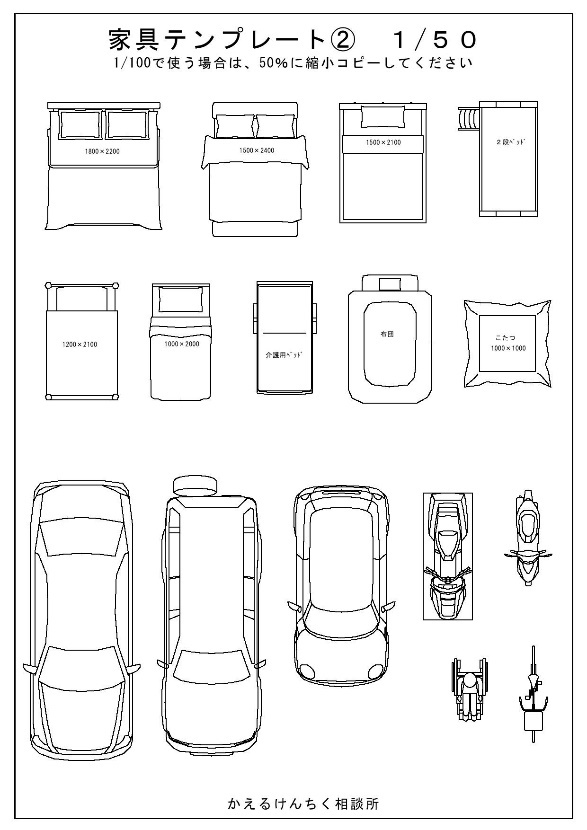
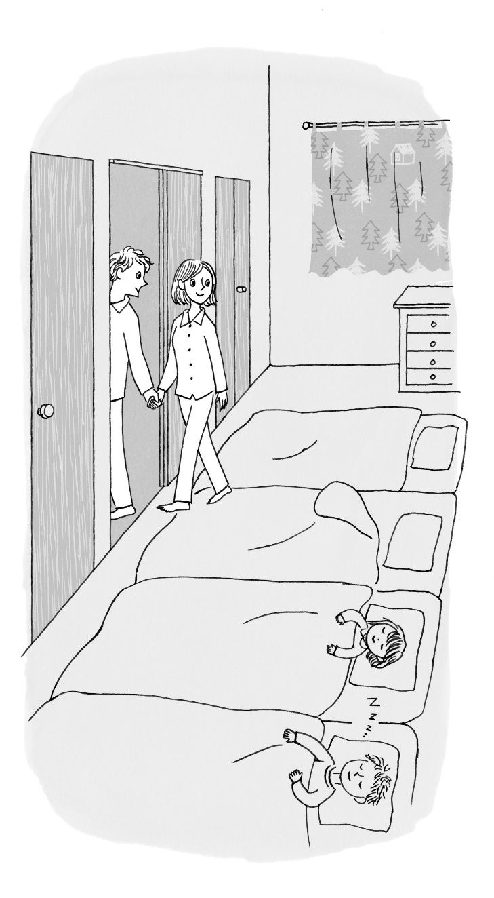

| 間取りで暮らすヒント: 家事時短で夫婦円満な家のつくり方 | |
| 船渡 亮 | |
| kabusikikaisha kaerukenchiku (2019) | |
まえがき
本書は、私が２０１７年から２０１８年にかけてアマゾンの ＫＤＰで出版した３つの電子書籍 「間取りで暮らす技術１～かしこく家事時短する動線の方程式～」、「間取りで暮らす技術２～日当たりと風通しの良い家にする方法～」、「セックスレスにならない間取り～子供がいても夫婦円満の仕組み～」から、重要な部分を引用し、再構成したものです。（５章のみ書き下ろしになります）
なお、家づくりでは、間取りだけなく、会社選びや収納、断熱気密、構造など様々な知識が必要になります。著者が運営するメールマガジンに登録すると、20 日間かけて、講座形式で家づくりを学ぶことが出来ます。また家づくりの最新情報を不定期で配信しております。
さらに、メールマガジンに登録されると、
・注文住宅の８つの難題 特別編集版（アマゾンランキング１位電子書籍）
・夫婦がときめく収納講座 （ＰＤＦ）
・営業マンを見極める７つの質問（ＰＤＦ）
など、家づくりに役立つコンテンツをプレゼントいたします。
こちらの「間取りで暮らすヒント読者限定サイト」からメルマガ登録できますので、是非、参加してみてくださいね。
間取りで暮らすヒント 読者限定サイト
では、あとがきで会いましょう。
施主はプロデューサー目線で
家づくりで施主がやれる仕事は何か？と考えると、かなり幅広い仕事に関わることが出来ます。
土地探しや銀行と建築会社選びから始まり、間取りも自分で考え、インテリアコーディネートもして、現場に足運び大工に指示し、現場検査や、壁に珪藻土を塗ったり、家づくりについてブログに書き、最後には本も出す、という人もいます。
時間に余裕があり、勉強熱心で知識があり、家づくりの現場に関わることが楽しい！という方は、どんどん、関わっても良いと思います。
ですが、家づくりに多く関わるほど、理想的な家に近づくか、というと、そうとも言えません。
施主が現場に関われば関わるほど、気持ちが作る側になります。作る側の気持ちになることは良いことのように思えるのですが、実は害のほうが多いのです。
例えば、間取り。
あなたが考えぬいて間取りを完成させました。これをパートナーに見せた時に、全否定されて、容赦なく問題点を指摘されたりしたら、どう思いますか？
「こんなに頑張って考えたのに、そんな風にいうことないじゃないか！」
と思う方が多いかと思います。私も、同じ立場ならきっとそう思います ( 笑 ) これは、作り手側の気持ちになっている状態ですね。
現場でも同じです。
大工が一生懸命頑張って作ったものが間違っていた場合、作り手側の気持ちになってしまうと、それをぶっ壊して、作り直せ！とは言えません。
あんなに頑張って作ってくれたのだから、そのままでいいよ、ということになりそうですよね。
自分で間取りを考えたんだぜ！と言いたい方や、現場の大工と仲良くなることが目的で注文住宅を建てるのであれば良いのですが、理想の暮らしを実現したいのなら、現場目線より、プロデューサー目線を意識した方がうまくいきます。
プロデューサーは、予算を決め、チームをつくり、方向性を示す、といったプロジェクトを統括することが役割になります。
施主も、全体の予算と銀行や不動産屋、建築会社を決め ( チームを作る ) 、自分達の理想の暮らし ( 方向性 ) を明示することが、仕事です。まずは、これをキチンと行うことが必要です。
これ以外は、自分でやっても良いですが、専門家に提案させ、その案について検討し、指示を出す、というスタンスでも問題ありません。
これがプロデューサー目線です。
とはいえ、多くの施主にとって家づくりは初めての経験です。知識も経験もないわけですから、具体的な指示を出すのは難しいですよね。ですから、こんな感じにしたい、という方向性を示すだけで十分です。
それに対して、建築会社が再度、提案する、というのを繰り返して、間取りや仕様等を決めていけば良いのです。
その方向性を示すのに必要になるのが、これから紹介する「間取りで暮らす技術」です。
暮らしを理解する
日本人は、比較的、間取りを理解が得意なようです。
中国で活躍している建築家が、中国の場合は全てパース（図面を立体化したもの）でプレゼンをしないとプランを理解してもらえないが、日本だと図面だけでも理解してもらえる、というようなことをインタビューで話していました。
10 年前に保育園児だった私の息子も、何も教えていないのに間取り図をみて、部屋の配置を理解していました。私の息子が特別な訳ではなく、多くの人が特に教えてもらわなくても、間取りを理解することが出来ます。そういえば、以前、変な間取りを集めた「間取りの手帖」という本もベストセラーになりましたね。
ただ、「間取りを理解する」ことが出来ても、その間取りの「暮らしを理解する」ことは難しいと思う方が多いのではないでしょうか？
「間取りを理解する」とは、キッチンは対面で、リビングの隣に和室があって、和室の窓がどの方向についている、ということを理解することです。映画であれば、「彼は彼女に別れを告げた」というようなストーリーを理解する、ということになりますね。
これに対して、「暮らしを理解する」とは、その家で私たちがどのような暮らしが出来るか？を理解することです。映画であれば、「彼は、（ある凶悪な事件に愛する彼女を巻き込みたくないから）彼女に別れをつげた」といったストーリーに隠されたメッセージ性やキャラクターの行動の意味を理解する（あるいは推測、想像する）ということになります。
「暮らしを理解する」 ために必要なのが、「間取りで暮す」という技術です。
注文住宅は完成し住んでみるまでどのような家なのかわからないのが難点ですが、「間取りで暮す」ことにより計画段階で「暮らしを理解」し、問題があれば間取りに修正を加えることでより、理想的な間取りに近づけることが出来ます。
注文住宅を考えているなら、「間取りで暮す」 を使わない手はないですよね。
間取りで暮す方法
早速、「間取りで暮す」方法を紹介しますが、やることは実にシンプルです。
「家族が起きてから寝るまでの一日の暮らしを、間取りを見て具体的に想像する」
これだけです。簡単そうでしょ？
実際、慣れればそれほど難しい話ではありません。
コツは３つあります。
１．なるべく詳細に具体的に一日の行動を想像する
一日の行動を具体的に想像しましょう。
例えば、結婚していて子供が二人いる女性の場合、
朝目が覚める
↓
夫はまだ寝ている
↓
そっとベッドから降りる
↓
寝室のドアを開けて廊下に出る
↓
ドアを静かに閉める
↓
廊下を歩きトイレに行く
↓
トイレのドアを開ける
↓
トイレの中に入る
↓
ドアを閉める
↓
用を足す
↓
階段をおりて１階にいく
↓
階段は東側にあるため朝日が入ってくるのを感じる
↓
洗面所へ行く
↓
洗面所の引き戸をあける
↓
顔を洗う
↓
前日に洗濯しておいた洗濯物を洗濯かごにいれる
↓
洗濯かごを持って洗面所を出る
といった感じです。書籍で書くとやたら長くなってしまうので、ここまでにしますが、こんな感じで考えていきます。このようにシミュレーションしていくと、
・女性は夫よりも早く起きて家事を行いますから、寝室のドアの開け閉めにも気を使いますね。もし、ドアの横にベッドがあるようでしたら、夫を起こしてしまうかもしれません。そのため、ドアの横にはベッドは置くべきではない。
・トイレの排水音が聞こえるため寝室横にトイレがあるなら、位置は検討した方が良い。
・階段は朝明るくて気持ちが良い。
・洗濯かごを持ってでなければならないので、洗面所のドアは引き戸が良い。
などがわかります。自分の動きだけでなく、家族の動きも同時にシミュレーションしてみましょう。
２．家具を配置する
間取りを考える時は、家具配置もセットで考えないと意味がありません。なので、平面図には家具の配置が書いてあるべきなのですが、設計者によっては書かない、あるいは考えていない人がいます。
またダイニングテーブルやＴＶ，ソファの位置は書いているけど、ベッドや箪笥、勉強机の位置は書いていないってこともあります。
「間取りで暮す」は、実際に住んでいる状態をシミュレーションするわけですから、図面には家具が書いてある必要があります。まだ決まってない場合でも、想定で図面に書き込むようにしましょう。それで不都合がある場合は、家具配置を検討するか、建築計画の見直しをするようにしましょう。
３．家族の成長や変化も想定する
家族構成をどのようにしたいかや、いつ家を建てるかによって、家に求めるものは違ってきます。
新婚夫婦でまだ子供がいない場合は、子供の数が未定なので、どれだけ子供部屋を用意して良いかがわかりませんよね。子供は一人の予定だから、子供部屋はひとつでいい、と思っていても、最初の子供が双子ってこともあり得るわけです。
双子になる可能性は、日本では１パーセントですから、普通にあり得ますよね。
私の妻も双子なので、とっても身近ではあります。
この場合は、大きく子供部屋をとっておいて分割できるようにするか、大き目の書斎を用意しておいて転用できるようにする、なども考えられます。
自分達の足腰が弱ってきた時のことも考える必要もあります。
手摺を付けられるようにしたり、１階で暮らしが完結するような間取りや、定年後は駅近くのマンションに住むからバリアフリーなんか考えない！っていうプランも良いと思います。
二世帯住宅の場合は、親世帯（又は自分たち）がいなくなった後のことも考える必要があります。昔は、30 年で建て替えるのが普通でしたが、今は、40 ～50 年は住み続けられます。将来は賃貸にしたり、観光地なら民泊にするって手もあります。
未来はわかりませんが、想定しておくことで、変化に対応しやすくなります。
またこれは気持ちの問題ではありますが、出来る限り想定して、その時考えられる最善の選択をしておけば、後で後悔することもなくなります。完全に想定外のことが起こっても（人生ではよく起こりますね）、仕方がないって思えるはずです。
「間取りで暮す」上で気を付けることは右記の３つですが、シミュレーションのためには、
・図面の読み方と理解の仕方
・寸法やスケール感
・住宅の基礎知識
を知る必要があります。次からは「間取りで暮す」ために準備するもの、具体的な方法、必要な知識等について話していきますね。
準備するもの
「間取りで暮す」ために必要なものは、以下の４つです。
・図面（平面図）
ハウスメーカーからもらった百分の一の縮尺の平面図を用意します。書き込みますのでコピーをいくつか用意した方が良いですね。
配置図、仕様書、立面図、断面図、展開図があれば図面を理解するのに役立ちますから手元においておきましょう。各図面の種類や役割は後ほど、解説しますね
・定規（三角スケール）
平面図に家具を書き込みために定規が必要です。百分の一の平面図であれば、図面の１ｃｍが１ｍになります。縦１．５ｍ×横０．９ｍのダイニングテーブルであれば、１．５ｃｍ×０．９ｃｍの長方形を書き込めば良いですね。
五十分の一の縮尺の平面詳細図がある場合は、図面の２ｃｍが１ｍになります。
縮尺が変わるとわかりにくくなるので、三角スケールがあると便利です。
断面が三角形の定規で、６つの縮尺を計測することが出来ます。ａｍａｚｏｎでも１０００円程度出せば買えるので、この際、購入しても良いですね。
業界用語としては、略して「サンスケ」とか「スケール」、図面の寸法がない部分を三角スケールで測ることを「分一（ぶいち）であたる」って言ったりします。
ハウスメーカーの設計士に図面を指して、「ここを分一で当たってもらえますか？」
とか言うと、「この施主、知っているな！」って思われること請け合いです。
・ペン
ペンであればなんでも良いのですが、書いては消すことが多いので赤か青のフリクションのペンがあると便利です。フリクションとは、こすると消えるボールペンのことで、設計者でも使っている人は多いですね。私も愛用しています。
以前は、打ち合わせ時に鉛筆を使っていましたが、消した時の消しカス処理が厄介でした。フリクションになってから、非常に快適です。
・巻き尺
家具の寸法を測ったり、図面に書いてある寸法が実際どれくらいなのかを知るために、巻き尺は必要です。裁縫用のテープの巻き尺でも使えなくはないですが、鋼製巻き尺が良いです。理由は、鋼製巻き尺は、メジャーが自立しやすく、高さも測りやすいからです。
３．５ｍのストッパー付きのものが軽くてコンパクトで使いやすいですね。１００円ショップで購入できます。
業界用語としては、鋼製巻き尺のことを「コンベックス」といいます。ＣＯＮＶＥＸとは、凸状の表す形容詞で、メジャー部分の断面が凸上であることが由来のようです。
図面の種類
ここでは、各図面の役割や意味を紹介します。
・平面図
いわゆる間取り図ですね。
単純に間取りがわかるだけではなく、天井高さ、床の段差、内部建具や窓の種類や大きさ、住宅設備の大きさや形状、床の仕上げ、壁の仕上げの範囲、天井の形状、下がり壁部分、バルコニーの出っ張りなど、建築計画の主要な情報が平面図に集約されているといえます。
他の図面がなかったとしても、しっかりした平面図があれば、計画のおおよそのことはわかる、というわけです。「間取りで暮す」場合は、平面図を主に利用します。
一番信用できる図面も平面図です。住宅は打ち合わせ中や工事中でも計画変更が行われますが、真っ先に平面図が修正されます。それ以外は後ほど修正って感じになるので、間に合わなかったり、忘れていたりで整合してない場合が多々あります。
「平面図と展開図が整合してないのだけど、どっち信じればいいの？」って監督に聞かれたことのない設計者はいないでしょう。恥ずかしながら、私もしょっちゅう聞かれていました（苦笑）
・配置図
建物と計画敷地の関係が明示されているのが配置図です。
方位、道路の位置、土地の高さ、敷地境界線と建物の離れ寸法、建物の高さ、駐車場や駐輪場の位置、塀の位置などが記載されています。
ここでは、駐車場やアプローチなどの大きさを確認します。特に狭小地で駐車スペースが小さい場合は、愛車が敷地からはみ出てしまうような計画がされている場合があります。
図面でみると車の絵が納まっているように見えるのですが、駐車する予定の車より小さかったりするんです。
また必須ではないですが、近隣の建物の配置と窓の位置を描き込んでくれる設計者もいます。「間取りで暮す」場合には、この近隣建物の情報は非常に重要になります。
例えば窓から見える景色って重要ですよね。開放的にしたくて窓をつけたのに、見えるのは隣家のトイレの窓だけ、ですと気持ちが良くないですよね。そのため出来れば、配置図に近隣建物の配置と窓の位置は書き込んでもらうようにしましょう。
・仕様書
建物で使われている材料を示したのが仕様書です。外壁や床、キッチン、お風呂などがどのようなものが使われているかがわかるようになっています。
「間取りで暮す」で必要になるのは、キッチン、お風呂などの住宅設備関係の情報です。ただ仕様書があってもイメージしにくいので、建材メーカーのプレゼンシートやショールームで確認した方が良いとは思います。
・立面図
立面図は建築物を、東西南北から見た形を表現したものです。
窓の大きさや位置を確認するために利用します。平面図に記載がある場合は特に必要はありません。
「間取りで暮す」とは関係ないですが、外観を理解するのは立面図だけでは難しい場合が多いです。そのため、３Ｄパースや模型を設計者に作成してもらいましょう。
３Ｄパースはハウスメーカーが依頼すれば、サイディングメーカーが無料で作成してくれます。もちろん外壁をサイディングで「検討している」ことが条件にはなりますが、「検討」だけであれば誰でも出来ますからね。納期は１週間程度ですから、使わない手はないでしょう。
・断面図
建築物を垂直に切ったものが断面図ですね。カットしたショートケーキを横から見た感じです。断面図では各部屋の天井高さや、１階と２階の高低差（階高）がわかります。
ここで重要なのが、天井高さと階高です。
天井高さは２．４ｍが一般的ですが、大和ハウスのＸＥＶＯ（ジーヴォ）のように２．７ｍある場合もあります。（狭い所が好きな夫を演じる竹野内豊さんのＣＭはいいですよね。）
天井高さは開放感につながりますが、窓の高さや色の使い方によっても感じ方は違ってきます。２．３ｍの天井高さでも天井までの窓の向こうに大きな庭があったりすれば開放的に感じます。観覧車の空間は狭いですが、窓が大きく、景色が広がっているので開放的に感じることが出来ます。また天井の色も濃い色ですと天井が低く、白ですと天井が高くみえます。
高い天井は魅力的ですが、その目的が「開放感を出したいから」なのであれば、他にも方法がある、ということです。またモデルハウスは２．７ｍだったから、自宅もそうだと思っていたら、完成したら２．４ｍだった、ということも、なくはないので確認しましょう。
階高は、階段の蹴上寸法（一段の高さ）を知るために使います。
階高を階段の段数（平面図に記載されています）で割ると蹴上寸法（一段の高さ）がわかります。蹴上寸法は上りやすさに影響しますので、確認してください。
蹴上寸法は、18 ｃｍですと比較的緩い勾配の階段、20 ｃｍは標準的、22 ｃｍだとキツイ階段という感じになります。これは体感的な人により感じ方が違うので、現在の家の階段の高さを測って比較すると良いですね。他にも展開図という室内の壁面を表記した図面がありますが、間取検討時は作られていない場合が多いので、なくても大丈夫です。
平面図の読み方
平面図の読み方ですが、サンプルの図面を用意しましたのでこちらを確認してください。電子書籍上では小さくてわからないと思いますので、左記のリンクからＰＤＦと動画で解説しています。
『間取りで暮らすヒント～家事時短な家のつくり方』読者専用サイト
サンプルＰＤＦと動画を見ていただければわかるようにしていますが、重要な点を５つ説明しますね。
①方位を入れてもらう
平面図は、上を北、下を南、右を東、左を西にすると決められています。住宅地図やグーグルマップもそうです。キッチリ上下左右、北南東西、となっています。
ただ、敷地が真四角で、南北に揃っているかというと、そういう敷地はごく少数です。東西に振れている場合がほとんどです。また五十分の一の縮尺の図面ですとＡ３の用紙と建物平面のレイアウトの関係で、下を西、又は東にする場合もあります。例えば、南北に長い平面の場合、Ａ３の用紙には入りきらないので、横にレイアウトする、という場合もあります。
というわけで、ほとんどの平面図が、キッチリと「上を北、下を南、右を東、左を西」となっているわけではないので、平面図に方位がないと、どっちに太陽が昇るのかがわからないわけです。
確認申請書類（建築計画が決まったら役所に出す設計図書）でも平面図には方位を書くことが決められています。
にも拘わらず......打ち合わせの平面図には方位が書かれていないことが多いです。さすがに家相や風水を気にする施主の場合は描かれていますが、それ以外は大手のハウスメーカーでも書いてない場合があります。
配置図を見ればわかるじゃん、と思う建築関係者の方もいるかもしれませんが、私たちが知りたいのは窓からどのように光が入るか、ですから、配置図ではわからないですよね。しかも打ち合わせ段階で配置図があるってことは稀です、
そのため、もし平面図に方位がなかったのであれば建築会社に文句を言って、記載してもらいましょう。その対応に時間がかかりそうなら、とりあえずグーグルマップを参考に方位を入れてみてくださいね。
②真北を入れてもらう
方位ですが、実は２種類あるってご存知でしたか？
建築関係者にとっては常識ですが、北には、真北（しんぼく）と磁北（じほく）の２種類があります。
真北は、地球の地軸（自転する際の軸）に揃っていますので、太陽がどの方向から上って南中し、沈むかは真北からわかります。建築関係で北といえは、真北を指します。住宅地図やグーグルマップではこの真北を採用しています。
磁北は、方位磁石（磁針）が指す北です。地球は大きな磁石になっているので、方位磁石により方位がわかるのですが、先ほどの地軸と地球の磁石はズレがあるため、４度～９度、真北と磁北はズレています。
私たちは太陽の動きが知りたいので、必要なのは真北です。
最近は大丈夫だとは思いますが、不動産屋の敷地図では、磁北が使われることもあるようですので、平面図や配置図に書いてある北は、真北なのか？は確認した方が良いですね。
③敷地境界線
「敷地境界線」も平面図に記載してほしいのですが、多くの平面図には描いていないことが多いです。特に１階の平面図は地上に近いのですから、玄関廻りや駐車場や駐輪場、勝手口廻りなど、敷地とどれくらい離れているかは、「間取りで暮す」ためには知りたいですよね。
平面図に敷地境界線が書いてない理由は、単純に面倒だから、とか用紙にレイアウトしにくいから、程度なものなので、こちらも建築会社にいって描いてもらいましょう。
④通り芯寸法と内法寸法は違う
平面図をみると、間取り図の廻り上下左右に寸法線が描かれていると思います。これらは、通り芯の間の距離を示しています。通り芯とは、柱（壁）の中心に入っている線のことですから、寸法は柱と柱の間隔を示していることになります。
これに対して、壁と壁の間の距離は内法寸法と言います。私たちが家具配置をしたり、空間を把握するために必要になるのは、この内法寸法です。
ではなぜ、内法寸法ではなくて、柱の間隔が図面に描かれているのか？これは、間取り図を描いたことがある方ならわかると思います。
もしあなたが間取り図を描いてくださいって言われたら、まずシングルラインで直線を描くと思います。この時、無意識に書いているのが通り芯です。この通り芯を基準にして建築は計画されます。もちろん、柱や壁には厚さがありますから、通り芯の計画が決まったら壁の厚さを肉付けしていきます。
壁の厚さは、構造や工法や仕上げによって変わってきます。柱の大きさは工法によって違いますし、壁にクロスを貼るのか、それともタイルを貼るのか？によって、内法寸法が変わってきます。建物は、柱などの構造躯体を立ち上げてから下地や仕上げを行っていきますので、施工する上では通り芯寸法がまず必要で、内法寸法は特に必要はありません。
そのため間取り図の段階では、この部屋が実際にどれだけの大きさなのか？は、設計者でないとわからないことが多いです。
とはいえ、構造がわかれば、壁の厚さがわかりますので、内法寸法も計算できます。大雑把な寸法になりますが、参考にしてください。
３．５寸柱（一〇五ｃｍ）の場合（在来軸組み工法）
部屋の内法＝通り芯間の寸法―１３０
４寸柱（一二〇ｃｍ）の場合（在来軸組み工法）
部屋の内法＝通り芯間の寸法―１４５
２×４工法の場合
部屋の内法＝通り芯間の寸法―１１４
⑤２×４工法の段差に注意
２×４（又は２×６）工法で２階に浴室がある場合、浴室部分で段差が生じることがあります。以前、コンサルした方でも段差があったので指摘したら、設計者からは聞いてないらしく寝耳に水だったようでした。
２×４でも段差なしにすることは可能なのですが、ユニットバスの選び方や間取り上の工夫が必要になります。段差は図面に記載されるはずですが、設計者が忘れている場合もありますので、念のため確認した方が良いですね。
家具を配置する
平面図の読み方がわかりましたら、次は家具を配置していきます。
家具は、ダイニングテーブル、ソファ、テレビ、ベッド、勉強机、箪笥、ウォーターサーバーなど家族によって様々です。建築会社と設計の打ち合わせをして平面図に明記されていればよいですが、ない場合はとりあえず入れてみましょう。
家具は図面に直接書き込んでも良いですが、他の紙に書いたものを切り取って図面に配置すると色々と検討が出来ます。
まだ家具の大きさが決まっていない場合は、ＰＤＦで家具のテンプレートを用意しましたので印刷して利用してみてください。ＯＨＰシートなど透明なシートに印刷すると使いやすいですよ。

１００分の１の図面ですと家具が小さすぎて配置しにくい場合は、50 分の１の図面をもらうか、１００分の１の図面を２００％に拡大コピーして使うようにしてください、
こちらで受け取ることができます。
『間取りで暮らすヒント～家事時短な家のつくり方』読者専用サイト
家具配置のコツは、通路幅の確保を意識することです。例えば、ダイニングテーブルを配置する場合に、壁や他の家具との距離がどれくらいになるか？を考えてきめます。
この距離に決まりがあるわけではないので、今お住まいの家で巻き尺を使い測って確認するのが良いですね。実際、私が設計する場合も、その都度寸法を測って決めています。
収納の考え方
間取りを考える上で、収納計画は非常に大事ですね。私が間取り診断をする上でも収納は重点的に診断するようにしています。
なぜ、収納計画が重要か、というとスッキリ片付いた部屋に住みたいからですよね。
では、間取りが理由でスッキリ片付かないのはどうしてでしょうか？
実は、理由は二つしかありません。
１．収納量よりも、物が多い
２．収納したい場所に、収納がない
１は、わかりますよね。収納量よりも物が多ければ、物があふれてしまうのは当然ですね。
では２は、どうでしょう？じつはこちらが忘れられがちです。
例えば包丁。包丁は通常、キッチンのシンク下あたりに包丁差しがあってそこに収納しますが、もし収納場所がテレビボードだったりしたら、かなり不便ですよね。恐らく、キッチンカウンターの上に出しっぱなしにされてしまうと思います。
もちろん、テレビボードに包丁を仕舞う人はいないですが（料理する以外の目的ならあるかもしれませんが......怖い想像をしてしまいました）、ご自宅の廻りを見回して、なんか片付られていないってモノは、収納したい場所に収納がないのが原因かもしれません。
収納したい（又は、しやすい）場所はどこなのか？は、「間取で暮してみる」ことで把握します。これはどこが正解っていうのはありません。
先ほどの包丁の例ですと、朝の料理番組 ＭＯＣＯ'Ｓキッチンを大画面で見ながら、
速水もこみちさん のような華麗な包丁さばきを真似したい、という方であれば、テレビボードに包丁を置いてあっても不思議ではないわけです。
どのような暮らしをしたいのか？を考えつつ、その暮らしが実現できるのかを「間取りで暮す」でチェックする、という流れにするのが良いですね。
なお、ここでは書ききれない収納計画や収納動線の本質について、「夫婦がときめく収納講座」という63 ページのＰＤＦレポートにまとめました。
メールマガジン登録者全員にプレゼントしていますので、是非、こちらから登録してくださいね。
間取りで暮らすヒント 読者限定サイト
「間取りで暮らす」はとても主観的なチェック方法です。実際に間取りに入り込んでシミュレーションをするわけですから時間がかかります。慣れれば時間は短縮できますが、その前に間取りの全体像をつかんで、方向性が決まってから、「間取りで暮らす」を行った方が効率的ですね。
この章で間取りの全体像を理解することで、その間取りの特徴やメリット、デメリットを理解できるようになります。
リビングは何階にするのが妥当なのか？
１階リビングにする、というのは最も自然な間取りです。玄関から段差なしでＬＤＫに行けますし、動線も短くすることができます。１階に主寝室を計画すれば、将来足腰が弱ってきたときも安心ですよね。１階リビングが快適と言えるには下記の条件を満たす必要があります。
「ＬＤＫの陽当たりを確保できる」
１階の陽当たりが良いのに２階リビングにする、というのは、２階からの景色を楽しみたい、１階にガレージが欲しい、２世帯住宅である、など特別な理由がある場合に限ります。
もちろん、陽当たりが悪いとわかっていても、段差がないことを優先して、１階リビングにする場合も多いですね。最近は平屋がブームですが、明らかに陽当たりが悪いにも関わらず、平屋を建てたい、という方も多いです。
「陽当たりの良いＬＤＫ」を優先するか、「段差のない生活」を優先するか、迷われている方も多いと思いますので、ここで１階リビングと２階リビングを特徴を紹介します。
ちなみに、自分の敷地の陽当たりがわからない、あるいは陽が当たる位置にリビングを計画したい、という場合、一番確実なのは、近隣の建物が敷地に落とす影を作図した「日影図」を作成し、影が落ちる時間が少ない場所にリビングを配置することです。
近隣の建て替えなどにより、日影は変わる可能性はありますが、ある程度は想定して、陽当たりの良い位置の見当をつけることはできます。
「日影図」作成には特別の技術は必要なく、手間は多少かかりますが、建築士であれば誰でも作成できるはずです。絶対、陽当たりの良い家にした方は建築士にお願いしてみましょう。
１階リビングの特徴
さて、まずは１階リビングの特徴を紹介しますね。
１．リビング階段が可能。
２．吹き抜けを作り、２階から採光をとることができる。
３．庭やウッドデッキと一体的に利用することができる。
４．縁側を作れば、お客様を招きやすくできる。
５．リビングに和室（または洋室）を隣接させれば、１階で生活が完結する。
６．庭にスロープを設置すれば、バリアフリー化をしやすい。
７．買い物を仕舞うのが楽で、ゴミを出しやすい。
ここまでがメリットです。私が重要だな、と思うのは、
３．庭やウッドデッキと一体的に利用することができる。
４．縁側を作れば、お客様を招きやすくできる。
の二つです。１階は地面と近いわけですから、庭の利用やご近所の人とのおつきあいは１階リビングの方がしやすいですよね。もちろん、これはプライバシーを重視したい方にとってはデメリットになります。
注意するポイント
８．耐震等級を高くすると、開放的な空間は出来にくい。
９．歩行者や近隣からの視線が気になりやすい。
10 ．近隣の建物の影響（日当たりなど）を受けやすい
耐震等級を高くするには、１階の耐力壁の量を増やす必要があります。リビングのように広い空間が必要な場合は、耐力壁確保のために工夫をする必要があります。
２階リビングは未来を想定して柔軟に考える
２階リビングの特徴も紹介しましょう。
メリットの紹介
１．屋根形状に沿った天井にすることで、天井高さを高く出来る。
２．道路や近隣からの視線が気にならない
３．日当たりが良い場合が多く、近隣の変化の影響を受けにくい。
４．１階が寝室の場合は耐震的に有利になり、構造的な自由度が高い。
注意するポイント
６．玄関 → リビング → 各個室へ という動線をとりにくい。
７．バリアフリーにするにはホームエレベーターが必要。
８．ゴミの一時保管のための工夫が必要。
９．大物家電や家具、ピアノは、搬入経路の検討が必要。
バリアフリー対策としてのホームエレベーターですが、若い家族の場合、設置しても使わないことが多いと思います。何しろ、動きが遅いですから（苦笑）
ただし将来的な備えとして、設置できる場所を確保するのはアリかと思います。ホームエレベーターを設置できるスペースを確保し、当初は納戸として利用する、という感じです。
注意が必要なのは、基礎の計画です。通常の基礎よりも深くする必要があるので、想定しているホームエレベーターの設計資料を取り寄せ対応できるようにしてもらいましょう。
私の家は２階リビングですが、陽当たりもよく、水廻りも２階のため家事動線も短くでき、またプライバシーを守りやすく快適です。バリアフリー対策はしていないですが、２階ですべて完結するように計画しています。また鉄砲階段（直線階段）なので、階段昇降機を設置することも可能です。
反面、各個室が１階のため、子供部屋の日当たりは、犠牲になってしまいます。ただ、実際、勉強するのは朝か夕方ですし、休日の昼間は外出しているか、ＬＤＫにいることが多いので、優先順位としては、ＬＤＫの日当たりの優先度が高いと感じ、２階ＬＤＫとしました。
２階リビングに限らず、将来をある程度見据えて計画することは大事です。あとで何とかなる、ではなく、ある程度想定することで、将来の出費を抑えたり、悩みを少なくすることができます。
自分で考えなくても、将来の状況を想定して設計してほしい旨を建築会社に伝えれば、建築士が何かしらの解決策は出してもらえるはずです。使えるものは使い倒しましょう。
快適な２階リビング必須なものとは
快適な２階リビングにするために必要なもの、それはバルコニーです。
バルコニーは、建築家っぽい言葉で言うなら、外部でもない室内でもない中間領域に属します。実はこの中間領域としてのバルコニーは、非常に使える空間です。
２階リビングに面してバルコニーがあることで、
・リビングの窓の先にバルコニーがあるので、広く見える
・隣地からの視線を遮ることができ、プライバシーを確保できる
・子供が小さいときは、バルコニーでプール遊びなども出来る。（ただし足掛かりになるものは危険なので置いてダメです）
・洗濯干し場としても使える。
・子供の上履きを干せる
・布団や毛布なども干せる
・カブトムシやトカゲなど家に入れたくない虫や魚、爬虫類も飼える
など、結構便利です。
また、キッチンや水廻りの横にサービスバルコニーがあれば、
・生ごみや資源ごみなどの一時置き場として利用できる。
・大掃除で一時的に大量のゴミが出たときに仮置きできる
というメリットを享受できます。
マンション住まいの方は、きっとイメージしやすいですよね。マンションのバルコニーは避難上、防火上必要、またエアコンの室外機置場、という意味合いが強いのですが、マンション唯一の屋外空間として活用している方も多いと思います
もちろん、敷地や近隣状況にもよるので一概には言えませんし、バルコニーがあることで、防水のメンテナンスも必要になるのですが、イニシャルコストやメンテナンス費用に対して、２階リビングのバルコニーはコスパが高いと思いますので、検討してみてくださいね。
３階建ては、ベース＋オプション方式で
３階建ては、２階建て＋１階、と考えるのが基本です。つまり、大人の生活のベースになるのは、２フロアまでで、１フロアは子供部屋や納戸など、常にいく必要のない部屋がオプションでつく、というイメージです。
例えば、こんな感じです。
１階 ガレージ、玄関、寝室、洗面、浴室、トイレ （ベース）
２階 ＬＤＫ、和室、トイレ、バルコニー（ベース）
３階 子供部屋、納戸（オプション）
この構成の場合、１、２階がベースで、３階がオプションになります。
これなら大人が暮らす範囲は、通常の２階リビングの２階建ての戸建てと同じですね。
逆に、
１階 子供部屋、納戸（オプション）
２階 玄関、ＬＤＫ、洗面、浴室、トイレ（ベース）
３階 寝室、納戸、バルコニー（ベース）
というのもありそうですね。玄関が２階なので、鉄骨階段で２階まであがります。階段を上るのは大変ですが、上ってしまえば、あとは２階がリビングですので、エレベーターのないマンションの２階、といった感じです。
このベースには、洗濯物干し場も含みます。この例ではバルコニーがそれにあたりますが、部屋干しでも同じですね。いくら陽当たりが良いと言っても、１階で洗濯して３階で干す、というのはちょっと大変です。
先日ＴＶで、浴室が３階で１階に寝室があるって家が紹介されていました。素敵な家でしたが、若いうちは良いけれど、歳をとると大変だと予想されます。
高齢者の住まいを特集した雑誌のインタビューで「若いうちは気にしなかったけど、この 10 段がしんどい」と、高低差のある敷地に住む 80 歳の男性が仰っていました。そうなったらマンションに引っ越せばいい、という考え方でもＯＫですが、駅前ならともかく郊外ですと戸建ては高く売れないことが予想されます。将来のシミュレーションは、適度にネガティブにするようにしましょう。
階段で老後が大変そう......っていうイメージが先行する３階建てですがメリットもあります。それは、階を分けることによってゾーニングがしやすいこと。私は、夫婦の寝室と子供部屋は離れていた方が（夫婦の営みを考えると）良いと思うのですが、それがナチュラルにできます。さきほどの、
１階 ガレージ、玄関、寝室、洗面、浴室、トイレ （ベース）
２階 ＬＤＫ、和室、トイレ、バルコニー（ベース）
３階 子供部屋、納戸（オプション）
という間取りは、洗濯は面倒ですが、プライバシーという意味では良いですよね。
また、１階に水廻り、寝室がありますので、将来、訪問介護を受けるような場合は楽です。
30 代の方が 80 歳になった自分を想像するのは難しいですし、 40 代の私にとっても同じです。私たちは、 50 年後のために家を建てるわけではないのですが、いずれ考えなければならないことです。自分の祖父母や親をみて、話を聞いて、その気持ちになって「間取りで暮らし」てみるのも良いですね。
平屋は東西に長い敷地で建てるべき
今、平屋が静かなブームです。私への間取り診断依頼でも、一定数、平屋希望の方がいらっしゃいます。
私が住む相模原市の市立博物館には、江戸時代の民家が再現されているのですが、階段などない平屋です。サザエさんやちびまる子ちゃんの家も平屋ですね。ちなみに私の祖父母の家も平屋でした。構造的にも平屋は有利です。大空間も作りやすいし、工期も短くて済みますね。とても自然な家のつくり、と言えると思います。
快適な平屋を建てられる敷地の大きさを確保でき、近隣環境にも恵まれているならば、是非、平屋を建てて欲しいと思います。ですが、残念ながら、そこまで恵まれた環境は少ないのが実情です。
たとえば、こちらの図をみてください。
同じ敷地で、平屋と２階建てを計画した場合のシミュレーションです。
真南に向いている 40 坪の敷地で、上が平屋にした場合、下が２階建てにした場合です。
同じ床面積の家を建てた場合、平屋よりも２階建ての方が南面の壁が２倍に増えています。また、南側の庭面積も２階建ての方が増えていますね。平屋だと北側に配置しなければならなかった子供部屋が二階建ての場合は、２階に南側に計画できるわけです、
では、同じ 40 坪でも、東西に長い敷地の場合はどうでしょうか？
どの部屋も南側に向いており、陽当たりが良いですね。このような恵まれた敷地の場合は、平屋も計画しやすいと思います。
つまり平屋にむいている敷地と、そうでない敷地がある、ということです。
これから敷地を探して家を建てるのであれば、平屋でも計画しやすい東西に長い土地を探せればよいですね。ですが、もしあなたの計画地が南北に長い敷地なのであれば、平屋に拘り過ぎると、極端に陽当たりが悪い家になる可能性があります。
平屋ではないけれど、ほぼ平屋と同じように暮らせる間取りとしてお勧めなのは、１階に暮らしの中心（ベース）を計画し、２階は子供部屋と納戸だけにする、というパターンです。
１階 ＬＤＫ、玄関、浴室、洗面化粧台、トイレ、主寝室（ベース）
２階 子供部屋、納戸（オプション）
先ほどの３階建ての時と同じ考え方ですね。
もちろん、陽当たりが暮らしの全てではないですし、陽当たりよりも段差がないことを優先しても良いと思います。マンションの１階の中住戸の３ＬＤＫも、北の共用廊下側はほぼ陽が当たりませんから、それと同じで問題ない、のであれば良いと思います。
大事なのは、計画している間取りでどのような暮らしが出来るのか？を理解することです。
平屋ならではの光の取入れ方
平屋は陽当たりが悪い！と脅した（というわけでもないのですが）ばかりですが、平屋ならではの光の取入れ方もあります。それは、ハイサイドライトです。
当たり前ですが、平屋は部屋の上がすぐに屋根ですので、上部から光を取り入れることができます。この屋根のかけかたを工夫すれば、このように高い位置から光を入れることができます。
恐らく、屋根からの光を取り入れる、という話になると建築家の先生たちは、天窓（トップライトとも言います）の提案をすると思います。
「天窓は、通常の窓よりも３倍の光が入るので明るいんですよ」と、ドヤ顔で話しているのが目に浮かびますが（先日もＴＶで話している建築家がいました）、３倍、というのは建築基準法で窓面積の３倍の採光量にしていいと決まっているだけで、実際にどれだけの光が入るかは別問題です。
天窓は間取りの形状を変えずに光を入れることが出来るので、設計者にとっては便利な代物ですが、取り扱いには二つの注意が必要です。
一つは、北面以外に設置しないこと。天窓には日射を調整する庇などを設置できないので、直接大量の光が入ってしまいます。特に夏は大量の直射日光を取得することになりますので、暑くなってしまい大変です。
二つ目は、防水施工です。屋根に設置する天窓は、雨漏りの原因になりやすいです。施工精度にもよるので、天窓＝雨漏り ではありません。私の家も天窓はありますが雨漏りしてはいません。ですが、普通の屋根に比べたらリスクは大きくなります。今後、ゲリラ豪雨の増加が予想されますので、他の選択肢があるなら漏水のリスクの高まる選択をする必要はないと思います。
これら二つの天窓のデメリットを解決できるのが、ハイサイドライトです。洋風な家で屋根形状を変えられない場合は、ドーマー屋根にして光を入れても良いですね。
光の取入れ方の提案は設計士の十八番で腕の見せ所ですが、デザイン重視の設計士は、「日射取得」と「防水リスク」に重きを置いてないことが多いです。天窓の提案があった場合には、この二つに注意しましょう。
「陽当たりが良い部屋」と「明るい部屋」は違う
では「陽当たりが悪い部屋」は暗いのか、というと、そんなことはありません。陽当たりが良い、ということは、直射日光が部屋に入りやすいということですが、光には直射日光の他に天空光というものがあります。
天空光とは、水蒸気や塵、雲に反射された太陽光のことです。天空光は窓前に空間があれば方位関係なく部屋に入ります。ですから、北側に大きな窓があり、かつ道路などに面しており、また内装が白など明るい色を使っているのであれば十分明るい部屋にすることは可能です。
画家のアトリエは北向きに窓を作る、というのは聞いたことがあると思いますが、これは直射日光に入らない北側に窓をつくることで、天空光の安定した光を期待してのことです。
実際、私の自宅の浴室は北向きですが、大きく窓を設け白色のタイルで仕上げているので、日中はかなり明るいです。
ですから、陽当たりが悪い場合でも、窓の計画、インテリアコーディネート、そして照明計画によっては十分、明るい部屋にできる、ということになります。
ここで注意していただきたいのは、建築士が「明るいリビングですよ」と言った場合は、必ずしも「陽当たりが良い」という意味で言っているわけではない、ということです。実力のある建築士なら悪条件であっても明るい部屋にデザインすることは可能です。それゆえに、陽当たりを重視していない場合が往々にしてあります。
建築士と話すときは、「明るい」と「陽当たり」の言葉の使い分けに注意してみましょう。
リビング階段だと、ひきこもりにならない？
以前、家づくりブログを読んでいたら「うちはリビング階段じゃないので、子供は引きこもりになってしまうんじゃないかと心配」という文章が目に留まりました。冗談で書いているのかな？と思ったのですが、結構まじめなようです。
果たして「リビング階段」でない場合、引きこもりが起きやすいのか？ひきこもり関係の書籍やインターネットで調べてみたのですが、関連する記述を見つけられず、中学生の息子に「なんでひきこもりの本とか読んでいるの？」と不審がられて終わったのですが、分かったことが一点あります。それは、
「どんな家族でも、ひきこもりはあり得る」ということです。
医学博士の斎藤環氏によると、確かにひきこもり事例の家族の典型と言われているのは、「過干渉の母親」と「無関心の父親」という組み合わせらしいですが、
「無関心だったり、厳格だったり、優しかったり、理解がありすぎたりと、なかなか一定のパターンにまとめることはできません」（引用：「ひきこもり」救出マニュアル 理論編）
とのことです。
ひきこもりの原因やきっかけも、人それぞれですから、「リビング階段」の家にだって、ひきこもりは起こる、ということになります。
そもそも、現在は共働きが多く、専業主婦は少数派です。（共働き世帯 60 ％、専業主婦 40 ％） 私の妻のようにフルタイムで働く女性も多いです。子供を保育園や学童保育に預けられるうちはいいですが、子供が一人帰りするようになると、最初に家に入るのは子供で、その次に母や父、となります。
リビング階段の目的は、子供が帰ってきた時に親と会話することですが、子供が家にいる状態で親が帰るのであれば意味がありません。親が子供のいる場所にいくか、子供が「おかえり！」と出てくるか、どちらかになります。それであれば、リビング階段である理由はないですよね。
「リビング階段」を否定するつもりはないですが、断熱気密性の低い住宅で採用するとリビングの快適性は悪化しますし、配置によっては動線が極端に悪くなる場合もあります。設計的な配慮と、「間取りで暮らす」ことによる、動線チェックは必要になりますね。
間取りによる家事動線の効率化は可能ですが、家族関係は日々の会話や同じ時間を過ごすといった地道な蓄積の上でしか成り立ちません。家の間取りでどうこうなるものではないのです。私も子育て世代真っただ中、偉そうなことは言えないのですが、夫婦仲良く、そして家族仲良くできるようにお互い頑張りましょうね！
洗濯動線をシミュレーションする
２０１７年５月に、セブンドリーマーズというベンチャー企業から、全自動衣類折りたたみ機「ランドロイド」が発売されました。話題になったので覚えている方も多いと思います。
今は洗濯物をたたみ、仕分けするだけですが（それもすごい技術ですが）、将来的には洗濯、乾燥、折りたたみ、仕分けまで自動で行うことを目指すそうです。これが仕分けした後に、クローゼットへの収納までを自動化できるのであれば、この章で書こうとしていることは意味がなくなります。
結婚以来 15 年間、船渡家の洗濯・掃除係を務めてきた私としては早くそんな未来が来て欲しいのですが（笑）、まだ先になりそうなので、ここでは効率的な洗濯動線の考え方について話します。
洗濯動線で大事なのは、「どこで洗濯し、どこに干すか」よりも、「どこで畳んで、どうやってしまうか」です。もちろん、洗濯し、洗濯物を物干し場まで運んで干して、という動線も考えなくてはならないのですが、そこまでしか考えてない場合が多いです。
では、ここで「間取りで暮らす」を実践してみましょう、ちょっと物語風で。
主人公は、小学生と保育園児の二児の父 35 歳。季節は冬。間取りはこちらです。
仕事から帰宅すると、まず風呂に入る。これが私の習慣だ。今日は残業だったので、風呂は最後だったが、一人で気兼ねなくゆっくり入れるのがうれしい。
風呂からあがると、まずホースを浴槽に入れて、残り湯で洗濯機を廻す。職場まで遠いので朝は時間がない。いつも夜のうちに洗濯するようにしている。
洗濯している間、妻が作ってくれた夕飯を食べる。今日は遅くなってしまったので家族は皆、寝てしまったようだ。
食事が終わり、片付けて食器洗い機を廻すころ、洗濯が終わったことを知らせる電子音がなる。晩酌をするまえに洗濯は済ませてしまおう。洗面室に向かい、洗濯物を洗濯かごに移し替え、洗濯物を洗面所の隣の和室にもっていく。
我が家の洗濯干し場は、和室の隣のベランダだ。洗面脱衣室→和室→ベランダという並びになっている。和室の天井の室内物干しには、朝干した洗濯物が、そのままかけてあった。我が家は外干しが基本だが、妻が帰宅した時にベランダから取り込んでくれたらしい。
洗濯かごを床におくと、まず室内物干しの洗濯物が乾いているかを確認、ピンチから外し、全て畳の上に放り投げる。その後、洗濯かごから洗濯物を取り出して、室内物干しに干してしまう。
干し終わると、畳上の洗濯物をかき集める。今日は洗濯物が多いので、ＴＶでも見ながらゆっくりやろうか。和室と続きのリビングにあるＴＶをつけて、洗濯物をたたみ、家族ごとに仕分けする。
畳の上に家族４人分の洗濯物を仕分けると、子供たちの衣類を和室の押し入れにある衣装ケースにしまう。ここまでやって、私の今日の仕事は完了だ。妻の衣類は、明日の朝、自分で寝室のクローゼットに片付けるだろう。もちろん、自分のものは今日、片付けてしまう。
後は、明日の朝、洗濯ハンガーを一気にベランダの物干しにかけるだけだから 30 秒ですむ。明日も晴れれば良いのだが......
さて、やっとゆっくり出来る。今日は日本酒で晩酌だ。
どこで畳んで、どうやってしまうか？
この洗濯の流れは、私の実生活に近いので恥ずかしいのですが（笑）間取りで暮らす、というのはこういう感じでシミュレーションすることです。
ここで重要なのが、洗濯を仮置きする場所、たたむ場所、そしてしまう場所。
動線だけ考えると、洗濯物を取り込んで、畳んで、仕舞う、ということになりますが、取り込むときに洗濯物が完全に乾いているとは限らないですよね。また、洗濯は他の家事と並行しながら行うと思います、この男性の場合は、洗濯だけすればよいですが、子供の世話をしながらだと、とりあえず外に干してある洗濯を部屋に入れて、時間が出来たらたたむ、というのが現実的ではないでしょうか？
また、洗濯の仮置き場所は、できればリビングなどから見えない場所がいいです。この男性の家ではリビング隣の和室が仮置きなので、リビングで寛いでいるときに、洗濯物が見えることはありません。
洗濯をたたみ、アイロンがけなどする場所も想定しておきましょう。和室があるならうってつけですが、家事コーナーなどでもよいですよね。
そして、衣類を仕舞う場所です。この例では和室の押し入れに仕舞ってしますよね。子供が小さいときは、洋服選びや着替えをサポートしてあげる必要があります。そして通常は、朝、食事が終わってから着替えをさせますよね。食事前に着替えると、洋服を汚してしまう可能性があるからです。
子供部屋がダイニングの近くにあるなら良いですが、階が違う場合は、子供部屋まで着替えさせに行くのは面倒です。そのため、ＬＤＫの近くに子供の衣類を仕舞う場所があると楽になるわけです。
洗濯の流れは、生活スタイルによって様々ですので正解はありません。私はかなりズボラですので、なるべく楽が出来るように計画をしました。これは片付けや家事全般に言えることですが、自分を過信しないことは大事かもしれません。
きっちり片付ければいい、とか、きっちり家事やればいい、多少面倒でもなんとかやる、って考えると、ほぼその計画は破綻します。住んでから楽をしたいのであれば、今のうちに、家事のシミュレーションをしておきましょう。
ウォークインクローゼットは収納率が悪い
収納は大きく分けて、納戸タイプと、押し入れタイプがあります。
納戸タイプは部屋全体が収納になるタイプで、納戸、ウォークインクローゼットやシューズインクローゼットなどがそれに当たります。
押し入れタイプは、部屋の壁面が収納になっているタイプで、押し入れ、クローゼット、下駄箱などですね。
さてこの二つのタイプですが、どちらが床面積あたりの収納量が多いと思いますか？
正解は、押し入れタイプです。納戸タイプは人が入って収納の出し入れするため、その通路分の面積が収納としては使えません。そのため床面積あたりの収納率は悪くなります。
こちらの表では、床面積４．５畳あたりの収納量を収納率としてあらわしています。おなじ４．５畳だったとしても納戸タイプと押入れタイプでは、収納率が違うことがわかります。
では、全ての収納を押し入れタイプにすれば、家全体の収納力がアップするか、というと、そういうわけでもありません。大人二人分の収納を確保するには、一般に３． 64 メートルの長さの収納が必要と言われますが（一人分が１． 82 メートル）、夫婦の寝室に３． 64 メートルの壁がとれない場合もあります。又、とれたとしても、壁一面が収納だと圧迫感があると感じるかもしれません。
その場合は、２畳分のウォークインクローゼットを計画すれば、３． 64 メートルの収納を確保することが出来ます。
これは最近流行りのシューズインクローゼットでもいえますね。シューズインクローゼットは、ベビーカーなど外で使うものを収納しやすい、靴が散らかっていても、玄関部分はすっきりしている、などのメリットはありますが、収納量は多くとれず、玄関が極端に狭くなることが多いです。
「ウォークインクローゼットが欲しい」「シューズインクローゼットが欲しい」という要望自体は良いと思うのですが、それに固執しすぎると、寝室や玄関などは狭くなり、結果的に住みにくいということになりかねません。
狭小住宅の場合は特にそうですが、そもそも、なぜウォークインクローゼットやシューズインクロークが欲しいのか？その要望をかなえるためには、他に選択肢はないのか？という視点で考えることも大事ですね。
理想は、小さくて広い家
「広い家」と「狭い家」どちらが良いですか？と聞かれて、「狭い」家がいい、と答える方は少数派だと思います。（１章で取り上げた 竹野内豊さんは、狭い方が良いかも？）
では、「大きい家」と「小さい家」はどうでしょう？こちらは、意見がわかれますよね。大きい小さいは、床面積の大小、または外観の見え方にもよります。立派に見せたい方は「大きい家」が良いし、それほど目立ちたくないし掃除も大変だからと「小さい家」が良いと言うかたもいらっしゃるはずです。
実のところ、生活する上で、「大きい家」にはメリットはあまりありません。大きければ掃除も大変、家事動線も長くなり、断熱性能も落ちる、光熱費もかかる、将来的なメンテナンス費用もバカになりませんね。
また、「大きい家」は「広いのか？」というと、実際はそんなことはありません。私の妻の実家は地主ということもあり大きな家に住んでいますが、昔ながらの区切られた家なので、空間の広さは感じられません。（昔の日本家屋という感じで私は好きですが）
家に対して期待するものは人それぞれです。大きくて立派にしたいというのを否定するつもりはないですし、私も１時期、１億以上の家しか扱わないっていう設計事務所に在籍していたこともあります。まあ、億超えるとお手伝いさんがいる場合がほとんどですので、家事動線とかあんまり関係なくなるのですが（笑）
では、「小さい家」で「広さ」を感じられるでしょうか？これは、もちろんＹＥＳ！です。
日本の建築家達は、「小さいけど広い家」にするための方法論がずっと考えてきましたし、私も同様です。
小さい家は、掃除も楽、家事動線も短く、燃費もよく、メンテナンスコストもかかりませんし、同じ予算なら質の良い資材を使うことが出来ます。
家全体の床面積を抑えながらも広くするポイントは
・家全体をワンルームとして考える
・廊下はなるべく短くする、またはなくす。
・子供部屋を小さくする
・視線が抜けるように空間や窓を計画する
・庭や外の景色を取り入れる
・窓の高さを高くする
・背の高い家具を置かない
などがあります。
敷地に余裕がある場合には、間取りを整理しシンプルにしよう、効率化しようという方向にならず、空間があまれば収納にすればよい、となりがちです。ハウスメーカーも安い材料で広い家にした方が、坪単価も低く抑えられ、あまり考える必要もないので楽です。ですが、１坪削れば、浮いた予算でいいキッチンや性能の良い窓を付けられ、しかも掃除やメンテナンスする面積も減るのです。一石二鳥にも 三鳥にもなりますね。
「小さくて広い家」を目指しても良いとは思いませんか？
回遊性があるのは楽しいけれど......
「小さくて広い家」には、「回遊性」を持たせた家も多いですね。
「回遊性がある家」とは、家の中をグルっと回れて、行き止まりがない家のことです。
私の自宅の２階（リビング階）も階段を中心において、廻れるようにしています。
「行き止まりがない家」、「子供が走り回れる家」など回遊性のある家はキャッチフレーズがつけられることが多いですが、一番のメリットは裏動線を作れることです。
ただデメリットもあります。それは通路面積が増えること。私の家も半畳ですが、回遊性のために犠牲にした（といったら大げさですが）スペースがあります。
小さな家なのに、通路スペースを作るのって本末転倒では？と思った方、まさにその通りである場合も多いです。私の家の場合は、半畳犠牲にしても回遊性を選び、結果、洗濯動線が非常に短くなり、洗濯に使う時間も減りました。収納よりも動線を優先した形ですね。
ですが、私が診断した間取りの中には、回遊性によって動線が良くなるわけでもなく、他のメリットもない、というもののあります。「私んちのキッチンは、グルっと回れるの！」と言いたいだけなのか、それとも回遊性があれば使いやすいと思い込んでいるのか、どちらかです。
こういうことをなくすには、やはり「間取りで暮らす」を実施するのが一番です。「リビング階段」も「回遊性」も「シューズインクローク」も選択肢のひとつであって、目的ではありません。柔軟に考える必要がありますね。
本章では、「日射」にフォーカスして、冬、日当たりがよく、夏は日差しをカットできる快適な家にするにはどうすれば良いかを考えていきます。
太陽に素直な間取りとは
「日当たりが良くて冬暖かい暮らし」がしたいなら、太陽に素直な間取りにすることが大事です。つまり、冬は太陽の光を取り入れて夏は遮蔽する、という当たり前のことを間取り計画に取り入れる、ということです。
「日当たりが良い家」にするのは、実は非常に簡単です。真南向きに大きく窓を配置するだけです。ですが、私たちは「日当たり」のためだけに家を建てるわけではありません。家族によって理想の暮らしは違いますし、敷地環境によっても条件は違います。
家事動線や収納、キッチンのデザインなど、間取りで考えることは山ほどあります。
またそもそも、「日当たりの良し悪し」については、設計者から説明を受けること自体があまりないのではないでしょうか。「日当たりは大丈夫ですよ」などと言ってくれるかもしれませんが、その根拠をわかりやすく説明する人は少ないし、実際に設計者が理解していない場合も多いです。
この章では、「太陽に素直な間取り」にするためにはどうすれば良いか。の本質的な部分を、施主にもわかりやすく解説していきます。これを理解出来れば、日当たりの良い暮らしを得ることはそれほど難しい話ではありません。ご自宅の間取り図を見ながら読み進めてくださいね。
日当たりが悪い間取りはどっちだ？
最初に、「日当たり」を理解する上で、非常にわかりやすいクイズをしたいと思います。
これは、一般社団法人 パッシブハウスジャパンが認定している「省エネ建築診断士」の試験でも出される問題ですから、正解したら「省エネ建築診断士」になれるかも。
「ＡとＢは、床面積も断熱性能も窓の大きさも同じ住宅ですが、どちらの方が日当たりがよいと思いますか？」
実際の試験問題には小難しい説明があるのですが、簡単に言うとこんな表現になります。どっちだと思いますか？
正解はこちらになります。

一見すると、Ａも良さそうに見えるのですが、午後から３の部分が影となるため、ＬＤＫへの日当たりが悪くなるんですね。
では、この形状が良くないか？というと、敷地が東に振れているのであれば午前中も午後も光が入りますから日当たりが良い、ということになります。
「太陽に素直な間取り」とは、このように太陽の光を最大限に入れるために、どのような形状にするのが良いのか？を考えることでもあります。
太陽に素直な窓配置とは
「南の窓は出来るだけ大きく、それ以外は出来るだけ小さく」
これは「太陽に素直な窓配置」の基本です。
「日当たりを良くするためなら、東も西も窓を大きくすれば良いんじゃないの？」と思われるかもしれないですね。「太陽の光は無料の暖房器具」と言われるくらい強力に部屋を暖めてくれます。暖房器具なのであれば、たくさんつけた方が良さそうです。
確かに東や西に大きな窓を設ければ、朝日や西日をたくさん部屋に入れることが出来ますし、実際、そのように計画された間取りを間取り診断でもよく見かけます。
これについては、日射取得、熱損失、暖房負荷という言葉を使って説明しますね。
なるべくわかりやすく説明しますので、ついてきてください。
窓には、太陽の光を室内に入れ部屋を暖める（日射取得）という側面と、室内の熱量が外に逃げていく（熱損失）という側面があります。
「日射取得」は言うなれば年金みたいなものですね。何もしなくても、自動的に入ってくる、そういうものです。
「熱損失」は生活費です。生きていくためには必ず必要なものです。年金よりも生活費の方が少なければ、何もしなくても暮らしていくことが出来ます。つまり、
生活費（熱損失） ＜ 年金（日射取得）
ということですね。
これが、年金よりも生活費の方がかかってしまうのであれば生活が成り立ちません。
生活費（熱損失） ＞ 年金（日射取得）
この場合は、バイトなどをしてお金を工面する必要があります。このバイト代が「暖房負荷」になります。「暖房負荷」とは、室温を一定温度に保つために必要な熱量のことです。年金（日射取得）では足りない分をバイト代（暖房負荷）で補う必要があるのです。
つまり、
生活費（熱損失） ＜ 年金（日射取得）＋バイト代（暖房負荷）
となりますね。
ここで「年金制度は大丈夫なの？」「ほんとにもらえるのかよ！」とか、そういうのは考えないでくださいね、切なくなりますから（苦笑）。
「もう歳だしバイトもしたくないなぁ。」つまり暖房負荷を大きくしたくない場合は、生活費（熱損失）を切り詰め、年金（日射取得）を大きくするしかありません。
ここで問題なのは、窓は日射取得もあるけれど、熱損失もある、ということです。
その損得勘定は方位によって違います。
南向きの窓は、熱損失よりも日射取得の方が大きくなります。ですが、東、西、北の窓はいずれも、日射取得より熱損失の方が大きくなることが多いのです。特に窓の断熱性能が低ければ低いほど、熱損失が大きくなる傾向にあります。
いくらたくさん年金をもらっても、それ以上に生活費として使ってしまっては、家計は破たんしてしまいますよね。それと同じことが窓の計画でも起こることになります。
とはいえ、南面だけに窓をつけると家が暗くなりますし、風通しも良くなく、あまり快適とは言えません。また熱損失は窓の断熱性能が高ければ小さくすることが出来ますから、物件ごとに考えていくことになります。
ですが基本的な考えとして、暖房負荷を小さくするためには、「南の窓は出来るだけ大きく、それ以外は出来だけ小さく」することを覚えておいてくださいね。
庇で日射遮蔽が出来るのは、真南だけ
「南の窓は出来るだけ大きく、それ以外は出来だけ小さく」することは、夏の日射遮蔽にもいえることです。
高気密・高断熱住宅は、取り込んだ熱を逃がしにくいので夏のオーバーヒート（室内が暑くなりすぎる）が問題なります。日射遮蔽の代表格は庇です。パッシブデザインの説明でこんな図を見たことはないですか？
これは、庇によって夏の日射を遮蔽し、冬の日射は取り入れる、ということを示しています。ですが、この図が成立するのは、夏は夏至、冬は冬至の南中時刻、つまり 12 時前後の一瞬だけです。また夏至は６月ですから日本は梅雨時期、冬至は 12 月ですから冬の始まり、どちらも夏本番、冬本番の一歩手前です。
夏で暑いのは８月、冬寒いのは２月ですよね。それを図にしたのがこちらになります。
季節の他に時間軸でも考えなければなりません。南中時刻は太陽が最も昇った時ですから、それ以外の日差しは低くなります。８月の 15 時頃の太陽は２月の南中時刻の太陽と同じ高さにあるので庇など関係なく光が入ってきます。
つまり南面の窓であっても庇だけでは日射遮蔽は十分ではないので、場合によっては、スクリーンや簾、外付けのブラインドなどで遮蔽することを考えた方が良い、ということですね。
そして南以外の窓は小さくすることで日射取得を少なくするのが得策、ということになります。
西側の富士山をリビングから眺めたい
パッシブハウスのセミナーに参加した時に講師の方がある事例を紹介してくれました。
それは、西側に富士山を望めるロケーションの良い敷地に家を計画した時のこと。施主は西側に大きな窓を要望しているけれど、設計者である講師の方は、日射遮蔽にも不利だし熱損失も大きいので、西側の窓は諦めてもらうように説得しようとした、という話でした。
「富士山は、外に出て見てもらえば良いのですから・・・」
ということでしたが、この話、どう思いますか？
私はとても違和感がありました。富士山が見えるのなら、少しくらい（まあ少しではないけれど）熱損失が大きくなって、日射遮蔽が難しくても窓は設けるべき、何なら夕陽を浴びた富士山眺めながらお酒を飲めるバーカウンターを提案したいくらいだ、と。
私たちは「暖房負荷の小さい家」をつくりたいわけではなくて、「理想的な暮らしをしたい」だけなのですから。これは別に富士山だけでなく素敵な景色が見える場合にも言えますね。
南以外に無駄に大きな窓を設ける必要はないけれど、取り入れたい景色があるなら、その方向に窓を設けるのは自然だと思います。あくまで「理想の暮らし」を実現する手段として、住宅、そしてスペックがある、という風に考えてくださいね。
中庭で日当たりを確保するには工夫が必要
中庭のある住宅に憧れを持つ方は多いと思います。特に住宅密集地では庭があっても周りから丸見えだし活用もしにくい場合が多いですからね。また、中庭から見上げると空を切り取ったように設計すれば「自分たちだけの空」と思うことが出来たりします。
前述した安藤忠雄の名作「住吉の長屋」も中庭形式でしたね。私の場合、大学の建築学科の学生になって初めて目にした実施図面がこの「住吉の長屋」ですから、当然、中庭に対しても思い入れも強くなります。
私が仕事で最初に中庭型住宅に関わったのは 20 代の頃、初めて入った設計事務所でした。ある有名な野球選手の家で、東向きに中庭がある住宅の設計補助をしたときです。時間をかけて設計した住宅で、図面では中庭の雰囲気も良さそうだし、キッチンメーカーはキッチンハウス、お風呂はヒノキと、仕様も高かったので完成するのが楽しみでした。
完成した建物を見たのは３月で、外観もクラシックでおしゃれだし、インテリアも良かったのですが、一点、想像と違ったのが「中庭部分」でした。
床がタイルで施工された中庭は、平面図上では素敵な空間というイメージだったのですが、実際は三方を壁に囲まれて圧迫感もあるし、光もほとんど入らない状態でした。
しかも、見えるのは自宅の壁以外は、隣地の壁なので「中庭」という憧れのイメージとは、程遠く寒々しいものでした。
なぜ、このようになったかは、皆さん、もうおわかりですよね。

この章の最初に話したように、自宅が日影をつくってしまうので日が当たらないのです。
幸いにしてこの住宅の場合、中庭に面しているのは廊下だけで、リビングは南の庭に面していましたから大した問題ではなかったのですが、これ以来、中庭を設計する時はどのように光が入るかを詳細に検討するようになりました。
その後、 30 代の時に設計した住宅ではこのように設計することで、中庭としてプライバシーを守りつつ、光をいれることに成功しています。日当たりの良い中庭にしたい場合は参考にしてくださいね。
南の窓は大きくすれば良い、というものではない。
窓は太陽の光を入れたり、外を見たり、風を入れたり、匂いを出したり、庭やバルコニーへの出入り口になるなどの機能もありますが、外観やインテリアデザインの面でも重要です。特に外観は窓配置によって印象が違いますから、ファサード（道路側の外観）は見た目を優先して綺麗に整えた方が良いですね。
それ以外の面については、日当たりやプライバシー、通風、インテリアデザインを考えて計画する必要があります。通風やプライバシーに配慮した窓計画については第４章で詳しく解説しますので、ここでは南面の窓計画でありがちな失敗を紹介します。
「南の窓は出来るだけ大きく、それ以外は出来だけ小さく」
これが太陽に素直な窓配置、という話をしました。考え方の基本ではあるのですが、計画によっては「南の窓を大きくしても日当たりが良くならない」ということが起こります。実際の例を見ていただいた方が良いので、私が間取り診断した事例見ていただきましょう。
図面を見る限り、南側に大きく窓が計画され、日当たりが良さそうに見えますよね。
では断面で見てみましょう。
南面には深い軒ありますよね。この軒は洗濯物を干したり夏の日射を遮るには良さそうですが、太陽の光はリビングに入るのでしょうか？実際に光がどのように入るか、先ほどのように、 12 、２，３月の南中時刻（ 12 時頃）の太陽高度を入れてみましょう。
このように見ると、一番光が入って欲しい２月にあまり光が入らないことがわかりますね。３月になるとほぼ光が入りません。
「え、こんなことって本当にあるの？」「プロが設計しているんでしょ？」と思うかもしれませんが、恐ろしいことに、こうした事例は間取り診断をしていると頻繁に見受けます。
こちらは 60 センチ庇を短くすることで、なるべく冬に光が入るように改善しました。
今回のように庇が出ていたり、バルコニーや２階が張り出していることで光を遮っている場合も多いです。中庭の例もそうですが、設計士も間取り図だけで考えている場合、どのように光が入るかまでは理解できていないのです。これは設計経験のある・なしは関係ありません。断面図で日射取得について検討するかどうかの問題です。
通常、家づくりの打ち合わせは、間取り図だけで進みます。そして間取りが確定し、確認申請を出すタイミングでも、間取り図と立面図を施主確認で済ませてしまう場合が多いのですが、これは非常に危険です。
ちなみに、先ほどの深い軒ですが、軒の高さが高ければ光は入ります。また、吹き抜けから日をいれることも出来ますね。深い軒を計画することと、日当たりを両立することは出来ないわけではないです。大事なのは、断面で考えることです。
日当たりの良い家にしたいなら、南側の断面図で光がどのように入るかを検討してもらいましょう。
なお、自分でも日当たりをチェックできるように、『超簡単！日当たり自己診断』というレポート（ＰＤＦ）を作成いたしました。
メールマガジン登録者全員にプレゼントしていますので、是非、こちらから登録してくださいね。
間取りで暮らすヒント 読者限定サイト
セックスレスを扱った漫画は何冊かあるのですが、私が最初に読んだのが、たかせシホさんの「ごぶさた日記」です。あまり性欲がない夫と二人の子供と暮らすたかせさんの実体験のエッセイ漫画なのですが、夫婦あるあるも多く、共感でき楽しめる内容になっています。
物語の中で、主人公であるたかせさんが、夜ムラムラしてセックスしたい、旦那を起こすぞ、と決意した時に、「洗濯物の部屋干し」や「子供達が眠る姿」をみて、やる気が萎えてしまうシーンがあります。
「日本のセックスレス率が高いのは、住宅事情のせいかも......」と呟いて、その日は諦めてしまうのですが、このように間取りが原因で夫婦の営みがしにくい、と思う夫婦は、全体の83 ％にも及んでいます。（「かえるけんちく」の読者アンケートによる）
この章では、セックスレスにならず夫婦円満でいるためにはどのような間取りにすればよいか、について考えていきます。
間取りでセックスレスになる？
「かえるけんちく」がおこなった「夫婦の意識調査２０１８」によると、子育て世代夫婦のおよそ90 ％が、子供がいることでセックスを諦める、といった経験をしています。
また、83 ％の夫婦がなんらかの理由で、家ではセックスしにくいと考えています。その理由を上位から紹介すると、
１．子供と川の字で寝ている 51 ．７％
２．子供部屋が夫婦の寝室の隣 14 ．６％
３．音漏れが心配 14 ．６％
４．家が寒すぎるので裸になりたくない 13 ．８％
５．同じ部屋なので新鮮味がない 11 ．７％
６．部屋が片付かなくてその気になれない ７．３％
となっています。

夫婦共に性欲が強ければ良いのですが、「ごぶさた日記」のたかせさんご主人のように性欲があまり強くない場合、ちょっとしたことも大きなハードルと思えて、「まあ、そこまでしてしなくて良いか......」となり、夫婦の営みを遠ざける遠因になります。また、「セックスしやすい家」って、普通に暮らす上でもかなり快適な家なのです。その理由は、次に話す解決策を読めばわかります。
間取りでセックスレスにならない５つの方法
具体的に「セックスレスにならない間取り」を考えていきましょう。
子供と川の字で寝ている
日本の幼児のいる家庭の71 ％が家族全員で川の字で寝ています。父親だけ別室を含めると、88 ％が親と子供が一緒に寝ている、ということになるそうです。（積水ハウスすまい・すまいるネットの調査による） 私が間取り診断をしている経験だと、一戸建てを建てる未就学児の子をもつ家庭のほぼ１００％が、親子で寝ているように思います。
１章にも書きましたが、親子で寝ることはスキンシップの絶好の機会です。子供も安心しますし、何より安らかな寝顔に私達も癒されますよね。
ここで問題になるのが、子供がいる横で夫婦の営みを行えるのか？です。
多くの夫婦がそのまま致しているのかと思うのですが、気になって出来なかったり、子供の寝言や寝返りにドキッとしたりで、落ち着いては出来ないですよね。
この解決方法はとてもシンプルです。夫婦の営み専用の部屋を一室設けて、そこにベッドをセッティングしておくことです。この部屋に最もふさわしいのが夫婦の寝室ですね。
普段、家族で寝る部屋は子供部屋が良いでしょう。３人家族なのであれば、６畳の子供部屋があれば問題ありません。子供が２人以上いるなら、子供部屋の壁は取り払いましょう。それぞれが小さな子供部屋でも複数つなげれば大空間になりますから、家族４人でも無理なく寝ることが出来ます。
床に布団を敷いて寝るのであれば、布団をしまえる奥行きのあるクローゼットが必要ですね。幅は１ｍ以上、壁芯で１３６５～１８２０程度のクローゼット、又は押し入れがあれば布団をしまうのに十分といえます。
子供部屋の壁をなくして計画する場合のコツは、壁で仕切った状態で、窓位置や照明、家具位置を計画し、その後で壁をなくすこと。広いからといって、「住んでから間仕切りを考えればいいや」と思うと、うまく壁を作れない可能性もあります。先を見越して計画することが大事ですね。
このように計画されていれば、普段は子供部屋で寝ていて、ちょっと今夜はどう？という時に寝室に移動すれば良いことになります。避妊具やセックストイなども夫婦の寝室においておけば完璧ですね。子供が赤ちゃんの場合は、ベビーモニターで様子がわかるようにしておけば安心です。また夫婦の寝室に錠をつけることで、急に子供は部屋に入ることも防ぐことも出来ます。是非、試してみてください。

子供部屋が夫婦の寝室の隣、音漏れが心配
子供だけで寝るようになった場合でも、子供部屋と寝室が隣だと音が気になりますね。またその頃は、子供の年齢も小学生くらいにはなっていますから、出来れば気づかれたくはないですよね。
子供部屋への音問題で最も有効なのが、子供部屋の隣に夫婦の寝室を計画しないことです。子供部屋は２階、夫婦の寝室は１階と階を変えるのがベストです。
どうしても子供部屋も隣になってしまう場合は、収納を間に挟むことで防音の効果を上げることも出来ます。下記のように同じ面積の子供部屋だったとしても、収納の位置を変えることで、夫婦の寝室のプライバシーを高くすることも出来ます。この場合は、廊下に収納も増えていますね。
このように収納を挟むことが出来ない場合には、壁自体を簡易的な防音壁にすることも有効です。
壁は厚く重くなるほど、音を通しにくくなります。壁の中にグラスウールなどの断熱材を充填する、または石膏ボードや遮音シートを追加することで遮音性能は上がます。
とはいえ、子供が起きている時にするのはさすがに抵抗がありますよね。後程話しますが、子供は早めに寝かせて、夫婦の時間を確保することが大事になります。
家が寒すぎるので裸になりたくない
付き合い始めの頃、暑さ寒さとセックスとは無関係だったかもしれませんが、結婚し付き合いが長くなると、「冬、寒い思いをしてまでしたくない」と考えてしまうかもしれません。もちろん暖房をつければよいのですが、渋滞の日本家屋は開口部が多い上に、断熱材が薄いですから、なかなか暖まりにくいです。
また２階の寝室は、断熱材や開口計画によっては夏、暑くなりすぎることがあります。
村上春樹の処女作「風の歌を聴け」に登場するＤＪは、その日の最高気温を伝えながら、
「37 度っていえば、一人でじっとしているより女の子と抱き合っていた方が涼しいくらいの温度だ」
と言っていましたが、さすがにその温度、夫婦で抱き合うには厳しいですよね（笑）
そんなわけで、夫婦の寝室、そして家全体の温熱環境はとても大事です。寝室は快適でも、行為のあと浴室までの寒い廊下を歩くのは嫌ですからね。
２０２０年には建築基準法改正により戸建て住宅の断熱は義務化されますが、現在でも大手ハウスメーカーであれば断熱基準以上の性能はクリアしています。また工務店でも高気密高断熱住宅を標準としている会社は増えています。（２０１９年２月現在では、２０２０年の断熱義務化は見送られる方向で検討されています）
断熱気密性や日当たり、窓のスペックは、３章で一部紹介した
「間取りで暮らす技術２: 日当りと風通しの良い家にする方法」
で話しているので、詳しくはそちらを読んで頂きたいのですが、ポイントだけ紹介します。
●断熱気密の最低基準
・部屋が個々に区切られておりリビング階段ではない場合
断熱性能：断熱等性能等級４（次世代省エネルギー基準）
気密性能：Ｃ値２．０以下
・リビング階段、吹き抜けで１、２階が空間で連続している場合の仕様
断熱性能：ＨＥＡＴ20 Ｇ１（トップランナー基準程度）
気密性能：Ｃ値１．０以下
●窓配置の考え方
南側は大きな窓にして日当たりを良くする。東、西、北の窓は最小限にする。またベッドヘッドの上には窓を配置しない（冷気が枕元に来るため）
また冷暖房器具にエアコンを使う場合は、ベッドに直接風が当たらない位置にエアコンを配置しましょう。
同じ部屋なので新鮮味がない
同じ相手だと新鮮味を無くしてしまうことを、クーリッジ効果、と言います。同様に、同じ部屋での営みだと新鮮味を無くしてしまうのは当然かもしれません。夫婦でラブホテルやシティーホテル、旅館などを利用しても良いですが、自宅でもいつもと場所を替えれば新鮮に感じるはずですよ。
では、実際、家のどこで営んでいるのか？「夫婦の意識調査２０１８」の結果を紹介しますね。
１位 寝室 86 ．９％
定番ですね。やはり一番落ち着けるしプライバシーも確保しやすいです。その分、代わり映えしないということになるのですが、ベッドシーツやボックスシーツを変えるだけでも随分、部屋の雰囲気は変わります。また人は視覚の影響を受けやすいので、夏は寒色系、冬は暖色系にするだけでも体感温度を調整できますよ。
２位 リビングのソファ 23 ．１％
二人でソファに座って、肩寄せ合って映画やＡＶを見ながら次第にイチャイチャする、といった流れは、付き合い始めた頃には良くあったのではないでしょうか？
今でもありますか？それは仲が良くていいですね！
子供が寝たあとや不在のときなら、キスやスキンシップだけでなく、セックスに至ってもいいですね。ブランケットやシーツを敷けばシミも気になりません。シチュエーションや景色が違うだけで興奮度もアップします。
３位 浴室 10 ．５％
浴室は、寝室についでプライバシーを守りやすい場所です。なかなか二人の時間をとれない忙しい夫婦でも、休みの日に一緒にお風呂に入れば自然とスキンシップをとりやすくなります。背中の流しあっても良いですし、くっついてお風呂に入ってもいいですね。子供達は、夫婦は一緒にお風呂に入るもの、と思ってもらえるから大丈夫。私の両親もよくお風呂に入っていたので、私自身、そういうものだと思っていました。
子供が不在なら、浴槽にバスローションを入れて、トロトロ感を二人で楽しんでも良いですね。ＬＣ（ラブコスメ）で購入することができます。
４位 ダイニング・キッチン ５．３％
ダイニングやキッチンでお勧めなのが、料理しているパートナーを後ろから抱きしめること。両手が塞がった状態の相手をやさしく愛撫してあげましょう。ただし、余裕なく家事をしているのにちょっかいを出すのはＮＧですよ。状況をみて大変そうであれば、まずは皿洗いや配膳などをサポートしてあげることが先決です。
パートナーが話しながら料理したいタイプなら、お酒を飲みながらキッチンでお喋りしても良いですね。対面キッチンの場合はカウンター越し、キッチン横にダイニングテーブルがあるなら、手が空いたときに並んで座ってもいいですね。
ダイニングで最後までいってもいいですし、その後、ソファや寝室に移動しても、また後の楽しみにとっておくのも手です。
このほか、少数ですが書斎や廊下、そしてベランダや庭と屋外でされている方もいらっしゃいました。外は近隣への配慮は必要ですが、夫婦の同意があるのなら、自宅のどこでもＯＫです。自宅でも新鮮味を出すことが十分可能ですよ。
部屋が片付かなくてその気になれない
セックスは、仕事や家事などは全部忘れて、二人だけで快楽を求めあえるのは良いところです。ただ、寝室の床が埃まみれだったり、靴下が落ちていたり、干しっぱなしの洗濯物が見えたりすると、気持ちも萎えますよね。
家中片付けるのは大変なので、せめて夫婦の寝室だけは家具やモノは最小限にして、寝るためだけの部屋にすることが大事です。またいくら片付けようとしても、収納量が足りないとモノはあふれてしまいます。一般的に成人に必要な収納量は、押し入れ１間分（１．８ｍ）と言われています。夫婦二人だと、１坪分のウォークインクローゼットに該当する大きさになります。夫婦の寝室は最低限、この収納量は確保しましょう。

また、箪笥は夫婦の寝室には置かないことです。箪笥をおくと、その上にもモノを置きたくなり結局、散らかった印象になってしまいます。地震時にも危ないので嫁入りダンスなどは、ＷＩＣ内に収納できるようにあらかじめ計画しましょう。
掃除が苦手なら、ロボット掃除機にお願いするのが一番です。床に物がおいてなければボタンを押すだけで、部屋の隅々まで掃除してくれますよ。
なお、収納量が多く片付いた家の方が夫婦仲が良い、ということがアンケート結果によってわかっています。
いつまでも夫婦仲良しでいるための収納計画について、「夫婦がときめく収納講座」という63 ページのＰＤＦレポートにまとめました。
メールマガジン登録者全員にプレゼントしていますので、是非、こちらから登録してくださいね。
間取りで暮らすヒント 読者限定サイト
時間に余裕がないとセックスに回数は減る
子育て世代には時間的な余裕がありません。忙しいのは悪いことではないですが、必ずやらなければならない「仕事」や「子育て」「家事」に時間を割り振ってしまうと、夫婦の時間は当然減ってしまいます。
実際、「時間に余裕がない」と感じている夫婦の二人だけの時間は、週に１時間未満しか持つことが出来ていません。これに対して、「時間に余裕がある」と感じている場合は、１～５時間程度は夫婦で過ごしています。また、月一回以上セックスしている割合にも、余裕ある、なしで13 ％の差がありました。
月に１回以上セックスしている割合
余裕がある 49 ％
余裕がない 36 ％
「仕事」「子育て」「家事」のうち、もっとも効率化しやすいのは「家事」です。「仕事」は自分だけでは完結しないし、「子育て」に効率化は馴染みません。ですが「家事」は、担当を決めれば自己完結しやすく、成果もわかりやすく外注も可能です。実際、パナソニックが行ったライフスタイル調査によると、75 ％の共働き妻が、仕事よりも家事を効率化したいと思っているそうです。
また時短したいと思う家事の内容ですが、１位～３位は以下となっています。
１位 片付け
２位 掃除
３位 洗濯
ここでは、家事時短を行うための間取りの工夫や、取り入れたい家電などを紹介しますね。
片付けを楽にする収納計画とは？
私は２０１４年にアキラ名義で「人生が変わる片付けのルール」という本を監修しています。
「人生が変わる片付けのルール」
ですから、片付けや収納についてはいくらでも話せるのですが、ここではシンプルにまとめます。片付けしやすい収納計画にしたい場合、どうすればよいか？それは、
「あなたが片付けやすい場所に、必要な量の収納を配置する」
これだけです。ここでのポイントは、「あなたが片付けやすい場所」という部分です。
例えば、子供がダイニングテーブルに学校の教科書を置きっぱなしだったとします。宿題をやったのはよいけど、その後、遊んでしまったからです。ダイニングと子供部屋は離れているので自分の部屋までいって片付けるのが面倒なんですね。ですが、テーブルのすぐ横に勉強道具を収納する棚があれば、すぐ片付けることは出来ます。
キッチン廻りも同じですね。調味料や油、調理家電、食器などがキッチンカウンターの上に置きっぱなしなのは、片付けしやすい場所に収納がないからです。たとえば、屈まないと収納できない観音扉の収納は、「屈む」という行為が面倒だし体に負担がかかるので、収納量があったとしてもあまり活用されません。多くの人にとって、片付けには意志が必要です。私も正直苦手です。ですから、最低に自堕落な自分を想像し、どれだけ楽を出来るか？という視点でキッチンは計画した方が良いですね。
また、「片付けやすい」は、「取り出しやすい」に置き換えてもいいです。つまり、
「あなたが取り出しやすい場所に、必要な量の収納を配置する」
トイレットペーパーや生理用品などのストック品は出来れば、袋のままトイレ内やすぐ近くに収納したいですよね。そうでないと補充するのが面倒です。いくら収納力のある小屋裏収納があったとしても、トイレットペーパーを置くには遠すぎますね。
遠いとどうなるか？
トイレ内や廊下にロールのままのトイレットペーパーが置かれる、という事態になります。これでは片付いているとはいえないですよね。
現在の住まいで考える場合は、実際、散らかっているポイントを見ればわかります。散らかっているモノを見て、毎回片付けたり、家族に注意したりするとなると大変ですし、ストレスがたまります。ですが、モノが置かれているということは、そこは置きやすい場所だからと、収納家具を考えてみるのも手だと思います。とはいえ、男性の皆さん、いつも脱ぎっぱなしにしている靴下の近くに洗濯かごをおく、ということではないですよ。靴下を脱いだら自分で洗濯機にいれましょうね。
注文住宅を計画していて、間取り図がある場合は、１章を参照して、間取りで暮らしてみましょう。「間取りで暮らす」とは、間取り図をみながら、どんな暮らしが出来るか？朝起きてから寝るまでの動きを想像することです。間取りを決める前に行うことで、問題点をチェックでき、必要な場所に収納を計画することが出来ます。私が行う間取り診断では全て「間取りで暮らす」ことで診断しています。その方法を本にまとめていますので、参考にしてください。
実際に片付けをする場合は、まず捨てることから始めましょう。捨ててモノの量を減らしてから片付ける、これが基本です。モノが増えれば増えるほど、高い片付け力が必要になります。まず捨てる、を合言葉にしてくださいね。
掃除で楽するためなら、何でも使おう
掃除が好きな方以外は、床の掃除は「掃除ロボット」に任せるのが一番です。私も半年前に購入したのですが、なんでもっと早く買わなかったのか？と後悔しました。ちょっとでも床掃除にストレスを感じているなら、「掃除ロボット」は購入すべきだと思います。
「掃除ロボット」を活用するためには、なるべく床にモノを置かないこと。またソファも「掃除ロボット」が通れるだけの空間があいているものを選んだ方が良いですね。また完璧を求めないことも大事です。常に清潔な家でないとストレスが溜まる場合は別ですが、水廻りは週に一回掃除すれば良いじゃないかな？と個人的には思っています。
「部屋を綺麗に保つ」ことよりも、「ストレスがない」ことや、「みんなが機嫌よく暮らせる」ことの方がよっぽど大事です。
またお金に余裕があるなら、家事代行サービスを使うのも良いですね。パートナーが忙しく自分ひとりで年末の大掃除をする状況なら、掃除は外注しても良いと思いますよ。私も昨年末はそういう状況だったので、利用しましたが短時間にここまで綺麗になるんだ！と感動しました。
新築やリフォームの計画があるなら、10 年間掃除しなくていいレンジフードや自動洗浄してくれる便器もあります。なるべく掃除しなくていい家を目指してみてもいいですね。
洗濯をラクできるかは、室内干しの位置で決まる
家族の服を洗濯して16 年。洗濯歴だけで言えば、若いママには負けません（笑）
家事で一番厄介なのが「洗濯」です。なぜかというと、掃除や片付け、料理と違い、洗濯は季節や天候には左右されるからです。特に外干し中心の場合は、毎日の天気がとても重要になります。
洗濯動線についても「間取りで暮らす技術１」に詳しく書いていますが、ポイントになるのが、室内干しの位置です。
外干し中心の家でも、室内干しの場所の確保は必要です。なぜなら雨天時にも洗濯は必要だからです。また天気が良くても冬は昼間に完全に乾かないことがあります。その場合は室内に洗濯物を移動して室内干しにする必要があります。
天気がよくて洗濯物が乾いていたとしても、洗濯物を畳む時間がない、余裕がないこともあります。夕方は腹を空かして子供も帰ってきますから、そっちの対応が大事ですよね。もちろん、面倒だから、今はやりたくないなーって思う時もあります。そのような場合でも、とりあえず室内物干しにかけておけば、時間稼ぎが出来ますよね。余裕が出来たら片付けすればいいし、子供やパートナーを巻き込んで一緒にやってもいいです。
室内干しの位置は、理想はリビングや夫婦の寝室から見えないところです。家族やパートナーのパンツを見ながらご飯を食べる、または眠りにつく、のは生活感ありすぎですからね。もしＬＤＫのとなりに和室があるなら、そこがベスト。いつもは一体に使えて、引き戸を閉めれば隠せる部屋があるのはとても重宝しますよ。
買い物の時短も考える
ランキングにはなかったですが、食材や日常雑貨の宅配サービスを使うことで、家事時短することも出来ます。フルタイムの共働き夫婦は、仕事帰りに買い物をしていると帰宅時間が遅くなりますからね。帰宅が遅くなると、お風呂や夕食が遅れ、子供が寝る時間も遅くなり、結果、夫婦の時間がなくなる、ということになります。
食材宅配サービスは、食材の入った発泡スチロールの箱が毎週、届けられます。面倒なのが「発泡スチロールの箱」の置き場所です。家にいてその場で返却できれば良いですが、できない場合はどこかに１週間、箱を収納する必要があります。玄関に放置されたまま、というのは気持ちが萎えてしまいます。
これから家を建てるなら、玄関近く収納やシューズクロークを検討してみましょう。マンション住まいならバルコニーにおいても良いですね。私の自宅は玄関脇の収納を整理して、箱を収納できるようにしました。同じようにミネラルウォーターのボトル置き場もあらかじめ考えておいた方が良いですね。
子供を早く寝かせるための工夫
家事時短して自由な時間が出来たとしても、子供が遅くまで起きていては営みもままなりません。４章でも話しましたが、子供が寝る時間を決めることは、子供が規則的な生活をする上でも、夫婦の時間を確保するためにも大事です。子供は21 時には寝ること、というルールを決めるのは当然として、ここでは間取りで出来る工夫を紹介します。
子供部屋のドアにガラスを入れる
川の字を卒業して、子供部屋で寝るようになった場合は、夫婦の営みの際には、本当に寝ているかどうか確認したくなりますよね。ドアを開けて子供の寝顔を見るのも良いですが（磯野家の波平さんは毎日、カツオやワカメの寝顔を見ているそうです）、外から明かりがついているかを見るだけでも寝ているかはわかります。
もっともわかりやすいのが、子供部屋のドアにガラスを入れることです。スリットガラスでも良いので入っていると寝ているか起きているかはわかります。21 時過ぎても明かりがついているようなら注意もしやすいですね。
子供部屋を確認しやすい位置にする
子供部屋は親が確認しやすい位置にするのが理想です。１階にリビング、２階に子供部屋なら、階段を上ってすぐ見える位置に子供部屋を配置すると良いですね。子供部屋のあかりのＯＮ／ＯＦＦがわかりやすいですし、リビングから「ご飯ですよー！」とかけた声も通りやすいです。リビングから叫んだ声が届かない位置にあると近くまでいかなければならず、割と面倒です。また友達が来たり、部屋で電話を話している声も、内容はわからないにしても、なんとなくは聞こえたりするのも親としては安心ですね。
子供にもプライバシーはあります。部屋に入るときにノックするなどは必要です。ですが私達の子供の頃、家にある固定電話を使って、友達や恋人とも電話していたので親には筒抜けでした。また聞かれたくない時は、外の公衆電話を使うなど工夫したと思います。子供は自立するまでは、ある程度の不自由は仕方がないと私は考えています。逆に夫婦の寝室は、階段からは遠い位置にして、プライバシーを守れるようにすると良いですね。
スマホは夜、子供部屋では使わせない
間取りの工夫ではないですが、子供部屋ではスマホやテレビを使わせないようなルールも決めておくのも良いかもしれません。特に夜ですね。明かりを消した後にスマホを使っていては意味がないですし、眼も悪くなります。もちろん、勉強にも影響します。
私の家では息子が高校生になった際にスマホを解禁したのですが、自宅ではスマホばかりする、夜もずっとスマホ、という生活が１か月続いたので、夕食以降はスマホ禁止にしました。夕食時にスマホをもってきて、リビングの棚におく、翌朝の朝食後は、部活や学校の連絡もあるのでスマホは利用しても良い、というルールです。
ご存知とは思いますが、中学生や高校生は、様々なＬＩＮＥグループに入っており、昼夜問わずひっきりなしにグループチャットしています。夜、私が仕事をしていたら、リビングにおかれた息子のスマホから、２～３分置きにＬＩＮＥの着信音がしていました。こんな状態では勉強に集中も出来ないし、睡眠もままならず、子供が寝ているのかも親にはわかりません。
スマホを持たせるべきか？という議論もありますが、学校も部活もスマホがあること前提で連絡がされるようになっています。ですから、持たせる場合は、ルールとセットで考えることが大事かと思います。
私は、年間１０００人以上の方から家づくり相談を受け、１００人の方の間取り診断を行っています。大手ハウスメーカーから工務店、設計事務所の図面を見ていて思うのは、 ほぼ全ての間取りには必ず「問題点」と「改善案」がある、ということです。
パッと見て、ツッコミどころのないようなパーフェクトに見える間取りでも、施主にヒアリングを行い、家族みなさんの暮らし方と適合するかを確認すると、若干の（あるいは大きな）ズレが見つかります。
ズレとはつまり「間取り」と「家族が理想とする暮らし」が一致していない、ということです。私が問題だと思うのは、その不一致に施主自身が気付いていないことです。致命的な不一致もあるし、住み方の工夫でなんとかなる場合もありますが、せっかく注文住宅で家を建てるわけですから、間取りの問題を理解した上で納得した家づくりをしたいところです。
ズレ（問題点）がわかると改善すべきことも見えてきます。改善すべきことは、階段の位置を変えることかもしれないし、ドアの位置を 30 センチ移動することかもしれません。改善の大小はありますが、設計段階では図面を修正するだけで済む話も、完成してしまうと、そのリフォームのためには、何十万円ものお金がかかります。（もしくは家を建て直す必要も出てきます）
そういったことを最小限にするために行うのが、セカンドオピニオンによる間取り診断になります。
間取り診断とは？
間取り診断とは、「計画している間取りで、その家族が理想の暮らしを送れるか？」を、建築士である家づくりコンサルタントが診断するサービスです。ここで重要なのが、「その家族が」という部分。つまり、他の家族ではなく、そこに住む方の暮らしと合致するのか？がとても重要です。
そのためには、まず、「住む方がどのような家族なのか？」を知る必要があります。私の場合は、施主の家族構成から仕事内容、起床時間や出勤時間、帰宅時間から就寝時間、趣味、家事分担、靴や洋服の量など、暮らしにかかわることを一通りヒアリングし、家族をイメージします。その上で、第一章で紹介した「間取りで暮らす」を実行します。
「間取りで暮らす」とは、実際に間取りを見ながら、朝起きてから、寝るまでの動きを想像することです。夫、妻、子供がどのように動くのか？を家事・収納動線も含めて確認していきます。住宅設計者であれば誰でも自然と行っていることではありますが、言葉として使い始めたのは私が最初です。
「間取りで暮らす」は、住む本人が行うのが一番良いです。実際、１，２章で紹介した「間取りで暮らす技術１」を読んで、セルフチェックを行っている施主の方も、沢山いらっしゃいます。ただ、図面を理解し、空間としてイメージすることには、ある程度の経験なため、施主に替わり、家づくりコンサルタントが「間取りで暮らす」を行います。
私が間取り診断をする場合は、この「間取りで暮らす」の部分を１時間以上かけて、施主の方に説明します。
「間取り診断しました、ここが問題で、こんな風に改善すると良いですよ」
で終わらせれば簡単ですが、これだと、なぜ問題なのか、どうして改善案が良いのかが、腑に落ちない場合が多いです。そこで、今の間取りの暮らしを理解してもらったうえで、じゃあ、どこを改善するのかを提案する、というスタイルをとっています。
間取り診断は、まだニッチなサービスなので、全ての家づくりコンサルタントの方が、このような診断しているわけではありません。ただ間取り診断を前述のようなものだとするのであれば、注文住宅を建てる方は大きなメリットがございます。理由は、７つです。
１．間取りを客観的に見直すことが出来る
打合せ回数を重ねて練り上げていくと、施主も設計担当者も間取りを客観的に見ることが出来なくなります。時間をかけて考えたのだから、良い間取りのはず、と無意識に考えてしまいます。でも、ガラケーをいくら改良してもガラケーにしかならないのと同じで、スマホを発明するには、「この携帯電話って、使いづらくない？」 という視点が必要です。
それが出来るのは、「もう５回も打ち合わせしたし、他の物件あるから、そろそろ間取りを確定したいな」と考えている設計担当者ではなく、完全な部外者である家づくりのコンサルタントになります。
２．複数の案を検討出来る
ハウスメーカーや工務店は、間取り提案のことをプレゼンテーションと表現します。プレゼンテーションとは一般に、『売り込みたいテーマや企画について、効果的に説得するための技法』のことです。建築会社が売りたいのは注文住宅ですから、間取りはプレゼンツールのひとつです。これぞという間取りが出来たら、図面やパースをカッコよく仕上げて、いかにこの提案が施主にとってメリットがあるのか、を説得することになります。それらの提案資料作成には時間がかかるため、基本、１間取りのみの提案になります。
家づくりコンサルタントにとっての間取りはコミュニケーションのためのツールです。注文住宅を売りたいわけではないので、プレゼンテーションに凝る必要はありません。施主が理解できれば手書きやラフなスケッチで問題ないため、短時間でいくつかの改善案を見てもらうことが出来ます。複数案のメリット、デメリットを確認した上で、納得した上で１つの案を選べるので、間取り確定のための納得感が違います。
３．間取りをブラッシュアップ出来る
ほぼパーフェクトな間取りでも、改善点は必ずあります。それは、風通しの良い窓や、よりカッコイイ屋根形状、動線を考えたドアの開き方、かもしれません。一見、地味ですが、後から直せない、直すとしたら数十万円かかるこれらを、事前に改善出来るのは、かなりお得です。
特に窓の位置や種類や高さは、インテリアの見え方にもかかわる重要な部分ですが、間取りだけで見ていても想像がつきにくいものです。これは施主が建築の素人だから、というわけでなく、設計士にとっても同じです。立体的に表現することで初めて気づくことも多いのです。
また設計士は自分が書いた間取りのチェックが出来ないものです。 私も同じです、誰だって自分には甘いものですからね。そのため、私が建築設計する場合は、必ず他の方に赤入れしていただき、チェックバックしていただくようにしています。間取りは、第三者の建築士が診断することで、初めてブラッシュアップが可能になるのです。
４．様々なアイデアをもらうことが出来る
家づくりコンサルタントをやっていて一番の役得は、様々なハウスメーカーや工務店の間取りを見ることが出来ることです。
注文住宅の間取りはアイデアの宝庫。これ、使えるじゃん！というものが沢山あります。それらを私たちコンサルタントは、こっそり、自分の引き出しに仕舞っておいて、必要な時に引っ張り出して、さも自分が考えたかのように（笑）、提案することが出来ます。
プライドが高かったり、単に面倒くさがりだったり、不勉強な設計士は、いつも同じような間取りしか作りません。家づくりコンサルタントがアイデア豊富なのは、元々、設計の才能があるからではなく、他の設計者に比べ間取りに触れる機会が圧倒的に多いのが理由です。
どんな分野でもそうですが、自分で考えられる範囲はたかがしれています。良い間取りにするための近道は、他人の家のアイデアを堂々とパクることです。
５．大幅に時間短縮出来る
回数は多いけど、施主の満足度が低い打ち合わせの共通点は、「設計士や営業がその場で間取りを考えている」こと。
設計士「どこか気になるとこありますか？」
施主「このトイレのドアが玄関から見えるのは嫌ね」
設計士「では、ドアはこちらに移動しましょう」
施主が指摘する→修正する→更に指摘する→修正する
みたいな話を打ち合わせ中に延々行っています。
設計士は、打ち合わせで決まった内容をただ、図面化するだけ。次回はそれを見せて、指摘があれば修正、なければ「これで確認申請を出しますね」で、やれやれ、やっと間取りが決まった、と一安心。
いくら打ち合わせに時間をかけたとしても、大抵の施主は、「ほとんど私の言った通りでプロの意見がないから不安」と思います。当たり前です。 実際にそれで相談してくる施主の方が実に多いです。
「注文住宅」は、施主が注文することによって出来る住宅のことですから、そういう意味では正しいプロセスなのかもしれないですが、多くの施主にとって、家づくりは初めての経験です。プロからの提案を欲しています。
家づくりコンサルタントの仕事は、いかに施主が気づいていない問題点を洗い出し、短時間で改善案を提案できるかが、腕の見せ所です。ダラダラと長く打ち合わせをするのではなく、診断一回分で、打ち合わせ３，４回の時間を短縮することが出来ます。
６．家づくりで後悔する確率が減る
家づくりの後悔で１番避けたいのが、間取りの後悔です。
リビングが狭い、日当たりが悪い、洗濯動線が悪い、家事がしにくい、洗面所にタオルがおけない、モノが片付かない、布団を収納する場所がない、風通しが悪い
と住み始めてから思っても、改善するのは難しいです。だからこそ、間取り図の段階で、実際に住んでいるかのようにシミュレーションして、問題点がないか、確認する必要があります。理想通りではなくてちょっと不便だな、という部分があっても、他を優先するから仕方ないと納得の上で選んだ間取りなら、後悔することはないですよね。
動線や収納だけでなく、日当たりも重要です。私は家を建てた方から、日当たりの相談を受けることがあります。間取りは、住み方を家に合わせればなんとかなることもあります。ですが、日当たりは建ててしまったあとで、出来ることは限られます。商業地域など、日当たりをあきらめざるを得ない地域もありますが、大抵の場合、計画の段階なら、日当たりをよくする方法は必ず見つかります。近隣状況さえわかれば、その敷地に、いつどの方向からどの角度で太陽光が入るかはわかります。あとはその光をどのように室内に入れるかを検討するだけ、だからです。
７．工務店やハウスメーカーとの関係も良くなる
建築会社にとって最もイヤなのが、工事中の計画変更や、竣工時のクレームです。これらは、建築会社の説明不足で起きることが多いです。最近の事例では、二階にある浴室や洗面所に入るのに、廊下から 20 センチの段差があったのですが、施主はそれに気づいていませんでした。
「多分、説明されていると思いますが、この段差、使いにくいですよね？この間取りに変更すれば、段差はなくなりますよ」という提案をしたら、
「段差？聞いてないです。知りませんでした」
という回答で私もビックリしました。
図面は確認申請に出せるレベルに仕上がっていたので、私が指摘をしなければ、段差があるまま施工されて、施主が現場に来て驚愕する、ということになっていたかもしれません。場合によっては、工事のやり直しや訴訟に発展します。
図面は見慣れてないと、わからない表現も多いです。全てを説明してもらう必要はないですが、使い勝手やデザインに関わるポイントは、わかるように説明してもらう必要があります。
家づくりコンサルタントは、そういうポイントは知っているので、施主にわかるように解説し、問題点があれば、改善提案を行います。結果、打ち合わせ回数も減り、建築会社とトラブルが起きる可能性も減ります。お互いに良いことばかりですね。
以上の７つが、私が考える間取り診断を利用するメリットです。これに対して、デメリットはなんでしょうか？２つ考えられます。
１． 間取り診断は有料である場合が多い
２． 相談する建築士により、コンサルの質が変わる
１は大きいですよね。家づくりでお金が必要なのに、プラスして間取り診断費用を捻出するのは、厳しい場合もあるかと思います。とはいえ、建築費用に比べれば、診断費用は微々たるものですし、工面できない費用ではないはずです。また知り合いに建築士がいる場合、その方に間取りをみてもらう、という方法もあります。
問題は、２の「コンサルの質」がどうなのか？ではないでしょうか。有料か無料かはともかくとして、間取りを診断してもらった内容が役に立たないものであれば意味がありませんね。
以前、間取り診断は２回目だというＮさんから相談頂きました。１回目は、本も出版している有名な家づくりコンサルタントに間取りを診断してもらったそうなのですが、ほとんど役に立たないアドバイスしかもらえなかったそうです。
念のため、１回目の診断を見せて頂きましたが、図面にさらっと赤書きされたものと、ちょっとしたコメントのみ。 10 分もあれば出来るのじゃない？という内容の薄いものでした。
そのコンサルタントは、間取りよりもホームインスペクター的な仕事に情熱がある方なので仕方ないのかもしれませんが、施主にとっては、そんなことはわかりません。このことから誰に依頼するかは、とても重要な問題であることがわかります。
ちなみにＮさんは、私の診断・提案により、大幅にプラン変更を行い、納得いく間取りにすることができました。Ｎさんも奥様も大変満足でコスパが高いと感想をいただいています
誰に間取りを診断してもらうべきか
間取り診断をお願いする人には、５つの条件を満たす必要があると思います。実はこの５つは、住宅設計者が満たすべき条件でもあります。すぐわかることなので、必ず聞いた方が良いですね。
１．住宅の設計経験がある建築士
当り前じゃないか、と思うかもしれませんが、建築士が設計するのは住宅だけではありません。マンションや公共施設、商業ビル、店舗をメインに設計している人もたくさんいます。そういう方は、住宅設計の知識がない場合が多いのでアドバイスを求めるのは難しいかもしれません。
２．一戸建てに住んでいる
マンション住まいの建築士って、結構多いです。もちろん、マンション住まいでも住宅の設計は出来るのですが、日々、体験をしていなければわからないこともあります。階段の上り下りや、家事動線、温熱環境、日当たり、庭や駐車場などは、マンションと戸建てでは、かなり変わってきます。マンション住まいの建築士は、間取りは作れるけど、そこでどのような暮らしが出来るのかを、実感をもって話すことができません。
例えば、バイクが好きでバイクしか乗らない人が、自動車の販売をしていても説得力に欠けます。バイクを売った方が良いんじゃないの？と普通は思いますよね。住宅設計でも同じことが言えます。
３．結婚している
注文住宅は結婚している夫婦が建てる場合が多いです。家は結婚生活の舞台とも言えますが、結婚の経験がない方に、その舞台設計を任せるというのは不安です。これは演劇を観たことない人が劇場の設計をするようなもの。聞きかじった知識で出来るかもしれませんが、わざわざ頼みたいとは思わないですよね。
ただ建築家の宮脇檀さんのように、結婚していたけど離婚したというのはＯＫだとは思います。経験していることが大事、ということです。
４．家事を一通りできる
当たり前ですが、家事ができない人が住宅設計する、というのはあり得ない話だと思います。「この家事動線が良いんですよー、でも家事は妻任せですけどね」
では、説得力に欠けますよね。
ただ、お手伝いさんが入って、家族が家事をしない家庭なら、これは関係ないですね。以前私が在籍していた設計事務所では、１億円以上の住宅しか設計しないって会社だったのですが、まず確認するのは、「お手伝いさんがはいるか？」です。
私も含め、多くの家庭では自分達で家事をしなければなりません。なるべく簡単に家事をしたいなら、家事が出来る建築士にアドバイスをもらいましょう。
５．子育て経験がある
男性であれ女性であれ、子育て経験の有無は、子育て世代の家を設計するなら必須だと、私は思います。日本の場合、女性がキャリアを積むには障害が多いので、女性の住宅設計する方には、晩婚でお子さんがいない方も多いです。私の元同僚にもいたので、このようなことを話すことは心苦しいのですが、施主側の立場に立てば、やはり必要な条件と言わざるをえません。
特に第一子を出産したばかりで、家を建てようと思ってらっしゃる方は、家づくりもそうですが、子育ての不安も大きいです。リビングと子供部屋の関係などは、実際に経験してこそ話せることも多いので、ある程度、お子さんが大きく、子育てにもしっかり参加している方が良いですね。
以上が、間取り診断を依頼する人、または住宅設計者の条件です。ただこれは、一人の方が全て満たしている必要はないと思います。たとえば、営業担当が子育て経験のある女性で、設計担当が未婚の男性という感じであれば、営業から意見がもらえるので良いかと思います。
また家を建てる方には、お子さんがない夫婦や、独身、老後の終の棲家を建てる方など様々です。そういう方には、３～５までの条件は必要ないかもしれませんね。大事なのは、自分達が建てようとしている家にあった設計者であるかを確認することです。
営業担当や設計担当がそれを満たしていない場合には、セカンドオピニオンとして条件に合う人から意見を聞く、間取りを診断してもらうようにするようにしましょう。
１章でも話しましたが、施主にはプロデューサー目線が必要です。ハウスメーカーや工務店にお任せではなく、家づくり全体を俯瞰して、足りない部分には専門家に参加してもらいサポートしてもらうことを、選択肢のひとつとして持っておくことは大事だと思います。
かえるけんちくの間取り診断
現在はたくさんの間取り診断・相談サービスがございます。サービス内容も価格も様々です。
私が運営している株式会社かえるけんちくでも、「プレミアム動画間取り診断」という間取り診断・相談サービスを行っていますので、参考までに紹介しますね。
間取り診断は動画で納品
間取り診断の方法は、面談、電話、スカイプ、メール、ＰＤＦなどいくつかございますが、かえるけんちくの場合は、動画を利用します。事前アンケートやメールでやりとりをした内容を元に、１２０分から１８０分程度の動画を作成、納品いたします。
動画で納品することのメリットは、情報を圧縮して伝えやすいことです。面談やスカイプ、電話の相談の場合、その場で相談できる安心感はありますが、反面、その場で考えてしまうことになるので、どうしても時間がかかります。
動画の場合は、事前にアンケート等のヒアリングを行い、間取り検討をおこなった結果を、室内パース（室内を立体的に表現したもの）なども利用して解説しますので、面談なら６時間かかる内容を、２～３時間に凝縮できます。
もちろん、行き違いや意思の疎通がうまくいかない事もありますから、動画を見終わった後に質問を頂ければ、依頼者の方が腑に落ちるまでサポートいたします。
また、いつでもどこでも視聴出来るのも、動画の特徴です。家づくりをされている方は、仕事や育児、家事、週末はハウスメーカーや工務店と打ち合わせと忙しい方が多いです。間取り診断・相談のために夫婦で時間を確保するのは大変ですが、２，３時間の動画なら、平日でも夫婦一緒に観ることが出来ますし、そこで話し合いも出来ます。
単身赴任などで夫婦やご家族が離れている場合には、それぞれで視聴して意見を交わしても良いですね。
３部構成の動画を作成します
「プレミアム動画間取り診断」は３部構成です。
１部は、日当たり、外構、防犯、断熱気密、構造の診断を行います。
２部は、間取り診断です。１章で紹介した「間取りで暮らす」を行い、その間取りでどのような暮らしが出来るのか？どこが問題なのか？をわかりやすく説明いたします。
３部は、改善提案です。２部で間取り診断をした結果、問題だと思われる部分を改善した案を提案いたします。
改善提案は、通常、２種類の提案をいたします。１つは、今の間取りを活かしたブラッシュアップ案です。もう一つは、階段の位置変更など大きな変更が伴う別提案です。間取りの完成度が高く、住む方が理想とする暮らしと近い場合は、ブラッシュアップ案中心に、理想とずれていると思われる場合は、別提案中心になります。
間取り診断を依頼頂いた方のご厚意で、間取り診断動画の一部をこちらで公開しています。間取りのヒントもたくさんありますので、興味のある方は視聴してみてください
家づくり相談・間取り診断ドットコム
家づくり相談が無期限にできる
家づくりは、間取りだけでなく、様々なことを考えなくてはなりません。情報は書籍で調べたりネット検索できますが、個別に検討しなければならない事も多いです。そのため、「プレミアム動画間取り診断」に参加した方は、家づくりに関することは、無期限・無制限で質問・相談することが出来ます。（間取りに関することは、間取り診断時に対応します）
また、２０１９年２月からは、ファイナンシャルプランナーが、かえるけんちくに参加しましたので、住宅ローンのご相談にも対応できるようになりました。家づくりに関することをトータルでサポートさせていただきます。
図面の最終チェックや現場相談にも対応
私が家づくりコンサルタントとして活動する目的は、施主の方に家づくりを楽しんでいただき、理想の暮らしを実現してほしいからです。そのためには、間取り診断して終わりでは片手落ちかと思い、間取りの最終チェックや現場でのトラブルの対応も行っています。
実際、工事が始まってからの相談も多くいただきますし、入居後の問題にも対応しています。
プレミアム動画間取り診断の詳細はこちらで紹介しています。
プレミアム動画間取り診断の紹介
あとがき
出版不況と着工戸数の減少により、家づくり本の新刊は以前に比べて少なくなりました。新刊といえば、ハウスメーカーや工務店がブランディングや集客のために自費出版したものばかりです。それらの本も家づくりに役に立つ内容であることが多いですが、自社の家を売ることが目的なので、どうしても内容に偏りが出てしまいます。
私の目的は、楽しく家づくりをしてもらい、入居後に理想の暮らしを実現してもらうことです。ハウスメーカー、工務店、設計事務所、のどれを選んだとしても、上記は可能だと私は考えます。そのため、本書は家づくりをされている方全てに読んで頂くことを意識して編集いたしました。
冒頭に脚本家である平岩弓枝さんの「楽しまなけりゃ馬鹿らしい。しかし、楽しむというのも、なかなか大変だよ。」という言葉を引用しましたが、家づくりはまさにそうですね。
楽しい！でも、大変。だからこそ、楽しい！
そんな家づくりを読者には体験して欲しいと思います。
本書が読者の家づくりに少しでも役立てれば幸いです。
２０１９年３月 船渡 亮
著者紹介
船渡 亮（ふなと あきら）
株式会社かえるけんちく 代表取締役
神奈川県出身・１９７１年生まれ
家づくりコンサルタント・設計士・書籍監修
これまで１５０件以上の住宅・建築をデザイン。初監修の書籍「人生が変わる片付けのルール」が二万部刊行される。現在、４０００人以上が学ぶメルマガ「家づくり＼脱／初心者講座」を運営。また、年間１０００人以上の間取り診断・家づくり相談を受ける家づくりコンサルタントとしても活躍。日本の家づくりをもっと楽しくする！ために、情報発信を行っている。
【かえるけんちく相談所 公式ブログ】
著作 ・監修
『 注文住宅の８つの難題～一級建築士が教える「いい家が欲しい！」施主のための問題解決法～』
『はじめて家を建てる！～理想の暮らしを実現する 家づくりの教科書 』
『間取りで暮す技術１～かしこく家事時短する動線の方程式 』
『間取りで暮す技術２～日当たりと風通しの良い家にする方法～ 』
『セックスレスにならない間取り～子供がいても夫婦円満の仕組み～ 』
『セックスレスにならない暮らし～50年後も愛し合える夫婦の習慣～ 』
『最高のハウスメーカー＆工務店の選び方２０１９～全国３２２社の特徴と評判を一挙公開 』
『人生が変わる片付けのルール 』 永岡書店
（かえるけんちく相談所 所長 アキラ 名義）
最新著作・監修情報はこちら
Buddy magazine vol.3 2019
間取りで暮らすヒント
～家事時短で夫婦円満な家のつくり方～
2019年 3月発行 初版
著者：船渡亮
Copyright(C)2019 KAERU Publishing All Right Reserved.